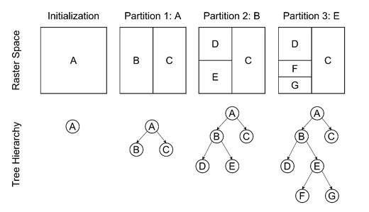
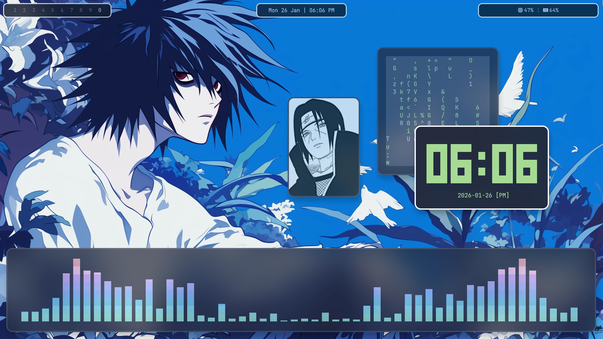

Introduction to wiki
What is bspwm-wiki?
It is a comprehensive and complete documentation for the Binary Space Partitioning Window Manager (BSPWM).
Bspwm is a tiling window manager which uses binary space partition system. (C students must have known what it means). Unlike other dynamic window managers like dwm and awesomewm, bspwm is what you configure and use. It is possible to do anything with correct integration of configs : bspwm + sxhkd + eww or polybar, you will get a perfectly aligned environment that obeys your thoughts. I named this documentation as bspwm-wiki because it is short and aligns with documentation policy of my interest.
Tip
If you do not know what exactly is binary space partitioning, don’t worry, the documentation will teach you.
What exactly is the purpose of The bspwm-wiki?
There has not been a very good documentation about the bspwm window manager in the web. Many beginners in linux stumble upon understanding the workflow and the exact process behind bspwm and struggle by copying someone else’s configuration blindly hoping that it works on their system too. Real power users do not copy, they build upon an already existing config or build something entirely from the scratch.
Linux punishes weak fundamentals, not because it is cruel towards you, but because it wants to make you stronger. Understanding about The Binary Space Partitioning Window Manager and Binary Space Partitioning before writing your first bspwm configuration will make you write optimised and good configs better than your copycat versions.
Most of the configurations are using bspwm in an underrated way. For example, people rerely use the query selectors with flags to batch-manipulate windows. Here’s an on-liner that toggles hidden states across all windows…
if [ -n "$(bspc query -N -n .hidden)" ]; then flag=off; else flag=on; fi
for i in $(bspc query -N); do
bspc node $i --flag hidden=$flag
done
The above code matters because it unhides or hides all windows dynamically, no tiling rules or scratchpads, reproducible, scriptable UI hacks…
Another powerful feature is the selector magic : @, which looks like : bspc node -f @parent, which lets you targe relative nodes - parent, first child, brother, etc…
This documentation aims in providing short scripts, cool tips for speeding up workflows, links to several popular bspwm configurations for quick references, a detailed explanation for the working logic behind bspwm, complete manipulation of the windows, advanced configurations and complex logic structures like : Open alacritty in the second workspace on every sunday nights in horizontally tiled mode along with ncmpcpp in a seperate alacritty window with so and so split ratio, when you have the habit of listening to music on sunday nights while working!
Everything you want to know about the bspwm window manager, you will get it here…
Help People Discover bspwm-wiki
-
Help others find about such an extensive documentation for bspwm by contributing to this project. You can open up pull requests, do corrections and error analysis for the code blocks in this documentation and expand it by adding specific case examples and linking other bspwm related projects.
-
If you find this documentation really useful to you, you can star this repository which will increase the ease with which this documentation is found and make it easier for people to reach out to this.
Note
If you have any issues related to codes provided in this documentation, you can open up an issue in the github repository.
Github repositories
Pages
How to master bspwm
How to master the bspwm?
To master bspwm (Binary Space Partitioning Window Manager), you must move beyond simple configuration and understand it as a programmable environment. Because bspwm is merely a C program controlled by a socket client (bspc), mastery is equivalent to mastering the bspc command and the logic of binary trees.
Here is the exhaustive curriculum for total bspwm mastery, structured from architectural concepts to advanced kernel-level scripting.
The Theoretical Foundation
Important
You cannot predict window behavior without understanding the data structure.
- The Full Binary Tree: Understand how every desktop is a root node that splits recursively.
- Internal Nodes vs. Leaves:
- Leaves hold windows (
client). - Internal Nodes hold structure (Split type: Horizontal/Vertical + Split Ratio).
- Leaves hold windows (
- Traversal Paths: Understanding how
next/prevcycles through the tree (pre-order, in-order, post-order traversal logic). - Tree Rotation: How “circulate” commands (
bspc node -C) physically rotate the tree structure.
The Control Interface
Mastering every subcommand of the binary space partitioning controller.
- Node Selection (The Query Language):
- Directional:
north,south,east,west. - History:
last,older,newer. - Family:
parent,brother,ancestor,descendant. - Path Notations:
@/(root),@/1(left child),@/2(right child). - Modifiers:
.floating,.tiled,.pseudo_tiled,.locked,.sticky,.private,.hidden.
- Directional:
- Node Manipulation:
- Movement: Moving nodes within a desktop, across desktops, or across monitors (
bspc node -m,-d,-n). - Resizing: Differential resizing (
-z top -20 0) vs. Ratio resizing. - Swapping: Exchanging the position of two nodes (
bspc node -s). - Flags: Toggling
hidden(minimized),sticky(global),private(ignored by automatic splitting),locked(immune to closing).
- Movement: Moving nodes within a desktop, across desktops, or across monitors (
- Preselection (
-p):- Manually defining the split direction and ratio for the next window.
- Visualizing preselection feedback colors.
- Canceling preselection (
bspc node -p cancel).
- Receptacles (
-i):- Inserting empty nodes (leaves without windows) to reserve layout space.
- Dumping windows into receptacles.
The Input Daemon
bspwm handles zero keyboard input. You must master sxhkd to drive it.
- Chord Chains: Binding sequences (
super + a ; b). - Brace Expansion: Creating compact matrices of commands (
super + {h,j,k,l}mapped to{west,south,north,east}). - Command Replay: Using
@to run commands on key release vs. press. - Sync vs. Async: Understanding when a command blocks
sxhkdand when it doesn’t. - Mode Simulation: Creating “modal” editing (like Vim) using chord chains or dynamic config reloading.
Logic & Automation
- Standard Rules (
bspc rule):- Static assignment:
bspc rule -a Firefox desktop='^2' follow=on. - One-shot rules (
-o): Rules that apply only to the very next window spawned.
- Static assignment:
- External Rules Command:
- Writing shell scripts that intercept
Window ID,Class, andInstancebefore the window is mapped. - Implementing complex logic (e.g., “If GIMP opens and I am on Monitor 1, float it; if Monitor 2, tile it”).
- Writing shell scripts that intercept
- Event Subscription (
bspc subscribe):- Listening to the event stream:
node_add,node_remove,desktop_focus,monitor_add. - Building daemon scripts that react to changes (e.g., “When I switch to Desktop 5, automatically change the wallpaper”).
- Listening to the event stream:
- State Dumping (
bspc query -T):- Reading the JSON state of the entire window manager.
- Writing scripts to save/load layouts (parsing JSON to reconstruct trees using receptacles).
Layout Management
- Automatic Schemes:
spiral: Windows split the largest node, spiraling inward.longest_side: Windows always split the longest edge (standard tiling).alternate: Windows alternate H/V splits.
- Manual Layouts: Building custom grids on the fly using preselection.
- Padding & Gaps:
window_gap: Space between nodes.top_padding,left_padding, etc.: Reserving space for bars/panels.- Configuring per-monitor or per-desktop padding (e.g., Mono-monitor setup needs different padding than Dual).
The Ecosystem
- Polybar / Lemonbar:
- Parsing the
bspwminternal report (bspc subscribe report) to display workspace tags (Occupied, Free, Urgent, Focused).
- Parsing the
- X11 Tools:
xprop: FindingWM_CLASSandWM_NAMEfor rules.xwininfo: Debugging geometry.xtitle: Getting dynamic window titles for scripting.xdo/xdotool: Sending fake input or managing windows thatbspccannot touch.
- Compositors (Picom):
- Handling transparency, shadows, and blur.
- Managing opacity rules for focused vs. unfocused nodes.
Advanced Hacks & Workflows
- Scratchpads:
- Using the
hiddenflag and unique IDs to create “drop-down” terminals that toggle visibility. - Managing a “Scratchpad Desktop” (e.g., Desktop 10) vs. Hidden Nodes.
- Using the
- Swallowing:
- implementing terminal swallowing (launching an image viewer “eats” the terminal window until the viewer closes) via generic scripts or tools like
devour.
- implementing terminal swallowing (launching an image viewer “eats” the terminal window until the viewer closes) via generic scripts or tools like
- Dynamic Gaps:
- Scripting gaps to disappear when only one window is present (
smart_gaps).
- Scripting gaps to disappear when only one window is present (
- Urgency Hints:
- Handling
WM_HINTS(flashing red borders) when a background window needs attention.
- Handling
Troubleshooting & Debugging
- The Socket: Understanding
/tmp/bspwm_...socket. - Logs: Checking
~/.xsession-errors. - Visual Debugging: Using
bspc query -Tpiped tojqto visualize why a window is stuck in a specific split.
Roadmap for Learning
Note
We recommend you to visit the Advanced section of the wiki only after learing the basic chapters since those bulk chapters are a cummulative of all the basics.
It is best to learn bspwm step by step. Introduction, Basics, Advanced, and then finally writing configurations.
Introduction to bspwm
bspwm is a minimal tiling window manager: you mainly configure the WM via a shell script (bspwmrc) and handle keybindings via sxhkd (sxhkdrc).
A good “getting started” path is: install bspwm + sxhkd, copy the example configs into ~/.config/…, make bspwmrc executable, then start sxhkd and bspwm from your X session.
Install and start
- Install
bspwm(the WM) andsxhkd(hotkey daemon). - Start
bspwmvia Xinit (or a display manager session), since bspwm is an X11 window manager.
Create initial config
- Copy the example configs from
/usr/share/doc/bspwm/examples/into:~/.config/bspwm/bspwmrc~/.config/sxhkd/sxhkdrc
- Make sure
bspwmrcis executable, because it’s a shell script that configures bspwm by runningbspccommands. - ArchWiki’s example uses these commands (adjust if your distro differs):
install -Dm755 /usr/share/doc/bspwm/examples/bspwmrc ~/.config/bspwm/bspwmrcinstall -Dm644 /usr/share/doc/bspwm/examples/sxhkdrc ~/.config/sxhkd/sxhkdrc
Learn the core concepts
bspwmrcis where you set window manager behavior (desktops, gaps, rules, etc.) by sending messages withbspc.sxhkdrcis where you define keybindings that typically callbspc(focus/move windows, switch desktops, launch apps).- bspwm doesn’t handle keyboard input directly, so a hotkey daemon like
sxhkdis required for shortcuts.
First troubleshooting checklist
If you boot into a blank screen and keys don’t work, check these first:
sxhkdis installed and actually started (and started in the background, since it blocks).~/.config/bspwm/bspwmrcis executable.- Your
sxhkdrcterminal command matches a terminal you have installed (the example config may referenceurxvt).
1. Core Architecture: The Binary Tree Philosophy
Unlike dynamic tilers (like DWM or Xmonad) that use predefined layout lists (master/stack, grid, spiral), bspwm is a manual tiler based on a data structure known as a full binary tree.
1.1 The Data Structure
Every monitor contains at least one desktop. Every desktop is the root of a binary tree.
- Nodes: The fundamental unit. A node is either a leaf (holding a window) or an internal node (holding two children).
- Leaves: The actual application windows (e.g., Firefox, Terminal).
- Internal Nodes: Containers that define the split direction (Horizontal/Vertical) and the split ratio (e.g., 0.5 for equal halves) between their two children.

BSPWM Binary Tree Structure
1.2 The Implication of “Manual” Tiling
In standard tilers, you “switch layouts.” In bspwm, you manipulate the tree directly.
- Automatic Mode: Bspwm decides where the next window goes based on the
automatic_scheme(usually “spiral” or “longest_side”). - Manual Mode: You explicitly “preselect” a region (North, South, East, West) on an existing node. The next window splits that specific node in the chosen direction. This architecture makes bspwm strictly deterministic. The layout is exactly what you build, nothing more, nothing less.
2. Installation & Environment
Bspwm adheres strictly to the Unix philosophy: “Do one thing and do it well.” It only manages windows. It does not handle:
- Keyboard input (handled by
sxhkd) - Compositing (handled by
picom) - Bars/Panels (handled by
polybarorlemonbar) - Wallpaper (handled by
fehornitrogen)
2.1 Dependencies (Arch Linux / General)
You must install both the window manager and the hotkey daemon.
# Arch Linux
sudo pacman -S bspwm sxhkd
# Debian/Ubuntu
sudo apt install bspwm sxhkd
2.2 X11 Session Entry
Because bspwm is just a binary, it must be launched via .xinitrc or a Display Manager (LightDM/GDM).
File: ~/.xinitrc
# Load resources
xrdb -merge ~/.Xresources &
# Start the hotkey daemon in the background (CRITICAL)
sxhkd &
# Start the compositor (optional but recommended)
picom &
# Set wallpaper
feh --bg-fill ~/Pictures/wall.jpg &
# Set cursor shape (fixes "X" cursor bug)
xsetroot -cursor_name left_ptr &
# Launch bspwm (must be the last line, no '&')
exec bspwm
3. The Nervous System: sxhkd
sxhkd is an X daemon that reacts to input events and executes commands. It is independent of bspwm but essential for it.
Config Location: ~/.config/sxhkd/sxhkdrc
3.1 Syntax & Chords
sxhkd uses a unique syntax that allows for “chord chains” (pressing keys in sequence) and “brace expansion” (compacting similar commands).
Brace Expansion (The Power Feature)
Instead of writing 4 separate lines for moving windows, you write one:
# Move window node (super + shift + {h,j,k,l})
super + shift + {h,j,k,l}
bspc node -v {-20 0, 0 20, 0 -20, 20 0}
- When you press
Super + Shift + h, it executesbspc node -v -20 0. - When you press
Super + Shift + j, it executesbspc node -v 0 20.
Chord Chains
You can create “modes” without actual modes.
# Press Super + o, release, then press 'r' to reload config
super + o ; r
bspc wm -r
3.2 Essential Keybindings Table
| Key Chord | Command | Description |
|---|---|---|
super + Return | $TERMINAL | Launch terminal |
super + w | bspc node -c | Close focused window |
super + {h,j,k,l} | bspc node -f {west,south,north,east} | Focus window directionally |
super + {1-9} | bspc desktop -f ^{1-9} | Switch to desktop 1-9 |
super + shift + {1-9} | bspc node -d ^{1-9} | Send window to desktop 1-9 |
4. The Brain: bspwmrc
File: ~/.config/bspwm/bspwmrc
Requirement: Must be executable (chmod +x bspwmrc).
This file is simply a shell script. It runs once at startup. If you change it, you must reload bspwm (bspc wm -r) to re-run it.
4.1 Monitor Configuration
You must explicitly map desktops to monitors. If you plug in a second monitor, bspwm won’t use it until you tell it to.
#!/bin/sh
# Clean setup for one or two monitors
if [[ $(xrandr -q | grep "HDMI-0 connected") ]]; then
# Dual monitor setup
bspc monitor DP-0 -d I II III IV V
bspc monitor HDMI-0 -d VI VII VIII IX X
else
# Single monitor setup
bspc monitor DP-0 -d I II III IV V VI VII VIII IX X
fi
4.2 Global Aesthetics
# Border width (pixels)
bspc config border_width 2
# Window gap (space between windows)
bspc config window_gap 12
# Split ratio (0.5 = 50/50 split)
bspc config split_ratio 0.50
# Border colors
bspc config normal_border_color "#4c566a"
bspc config focused_border_color "#88c0d0"
# Focus follows mouse (true/false)
bspc config focus_follows_pointer true
5. Control Plane: Mastering bspc
bspc (Binary Space Partitioning Control) is the command-line client. You use it in bspwmrc, sxhkdrc, and your own scripts. Understanding bspc is understanding bspwm.
5.1 Selectors: The Query Language
Almost every bspc command requires you to select a target.
- Nodes:
-n(Target a window) - Desktops:
-d(Target a workspace) - Monitors:
-m(Target a screen)
Advanced Node Selectors
You can target nodes based on relationships, flags, or history.
focused: The currently active window.east,west,north,south: Directional neighbors.last: The previously focused node.biggest: The largest node on the desktop.@parent: The internal node holding the current window and its sibling. Example: Swap the current window with the biggest window on the desktop:
bspc node -s biggest.local
5.2 Node Modifications
- Flags: Nodes can be
hidden,sticky(follows you across desktops),private(ignored by some queries), orlocked(cannot be closed).
bspc node -g sticky # Toggle sticky
bspc node -t floating # Float the window
- Preselection: The killer feature. Define where the next window opens.
bspc node -p south # Preselect the bottom half
bspc node -p cancel # Cancel preselection
6. Window Management Dynamics
6.1 Manual vs. Automatic
By default, bspwm splits windows automatically (spiraling inward). To take control, you use Preselection.
- Input: User presses
Super + Ctrl + L(East). - Visual Feedback: Bspwm highlights the right half of the current node in a distinct color (configurable via
presel_feedback_color). - Action: User opens a terminal.
- Result: The terminal spawns exactly in that highlighted area.
6.2 Receptacles
A Receptacle is a “placeholder” node—a leaf that contains no window. It reserves space in the tree layout.
- Use case: You want to build a complex layout (e.g., 3 small windows on the left, one big on the right) before you open the applications.
- Command:
bspc node -i(Insert receptacle).
6.3 Swallowing (Terminal Suppression)
“Swallowing” is when you launch a GUI app (like MPV or Sxiv) from a terminal, and the terminal disappears, being “swallowed” by the new app. When the app closes, the terminal returns.
- Bspwm does not do this natively.
- Solution: Use an external listener script or a wrapper tool like
devourin your sxhkd config.
7. Advanced Logic: External Rules
This is bspwm’s most powerful configuration feature. Instead of a simple “If app is Firefox -> move to desktop 2” list, you can point bspwm to a script.
Config: bspc config external_rules_command ~/.config/bspwm/external_rules
7.1 The External Rules Script
Bspwm passes the Window ID, Class, Instance, and Title to this script as arguments. The script prints commands to stdout that bspwm executes for that specific window.
Example: ~/.config/bspwm/external_rules
#!/bin/sh
wid=$1
class=$2
instance=$3
title=$(xtitle "$wid")
# If it's a Picture-in-Picture window (Firefox/Chrome)
if [ "$title" = "Picture-in-Picture" ]; then
echo "state=floating"
echo "sticky=on"
echo "border=off"
exit 0
fi
# If it's GIMP, move to desktop 8 and follow it
if [ "$class" = "Gimp" ]; then
echo "desktop=^8"
echo "follow=on"
exit 0
fi
# Complex logic: If 2 nodes already exist on desktop 1, send next one to desktop 2
count=$(bspc query -N -d ^1 | wc -l)
if [ "$count" -ge 2 ]; then
echo "desktop=^2"
fi
This allows for logic impossible in other window managers (e.g., “Float this window only if it’s Tuesday and I’m on Monitor 2”).
8. The Ecosystem
A “naked” bspwm is just black screens. You need the ecosystem to make it a workstation.
8.1 Polybar (Status Bar)
Polybar has a built-in bspwm module. It can display the focused desktop, occupied desktops, and urgent alerts.
Module Config:
[module/bspwm]
type = internal/bspwm
label-focused = %name%
label-focused-background = #3b4252
label-focused-underline= #88c0d0
label-occupied = %name%
label-urgent = %name%!
label-empty =
8.2 Rofi (Application Launcher)
Rofi works perfectly as a menu. Bind it in sxhkd:
super + space
rofi -show drun -show-icons
8.3 Scratchpads (Hidden Windows)
Bspwm creates scratchpads easily using node flags.
- Hide:
bspc node -g hidden -f - Show:
bspc node <selector> -g hidden=off -fScripted Toggle (Sticky Scratchpad):
#!/bin/sh
id=$(xdotool search --class "scratchpad_term" | tail -1)
if [ -z "$id" ]; then
# Launch if not running
alacritty --class scratchpad_term &
else
# Toggle visibility
if bspc query -N -n "$id.hidden"; then
bspc node "$id" -g hidden=off -d focused -f
else
bspc node "$id" -g hidden=on
fi
fi
9. Troubleshooting & Debugging
9.1 The Blank Screen of Death
If you log in and see nothing:
- Check Executable: Did you
chmod +x ~/.config/bspwm/bspwmrc? - Check sxhkd: Is
sxhkdrunning? Switch to TTY (Ctrl+Alt+F2), login, and runpidof sxhkd. - Check Terminal: Does your
sxhkdrclaunch a terminal you actually have installed? (Default is oftenurxvt, you might havealacrittyorkitty).
9.2 Tree Visualization
To understand why your windows are splitting weirdly, dump the tree state:
bspc query -T -d | jq .
This outputs the JSON representation of the current desktop’s binary tree.
9.3 Orphaned Nodes
Sometimes a “ghost” node remains. Cleanup:
# Remove the node explicitly
bspc node <node_id> -k
Architecture of bspwm
1. Architectural Internals
1.1 The Binary Space Partitioning (BSP) Model
At its core, bspwm differs fundamentally from dynamic tilers (like i3, dwm, or xmonad) because it maps windows directly to the leaves of a full binary tree. There are no “lists” or “stacks” of windows; there is only the tree.
The node_t Structure
Understanding bspwm requires understanding the C structure that represents every node. A node is the atomic unit of the window manager.
- Internal Nodes: These are purely structural. They do not hold windows. Their sole purpose is to define a region of space and how it is split.
- Properties:
split_type(Horizontal or Vertical),split_ratio(0.0 to 1.0, default 0.5),first_child(pointer),second_child(pointer).
- Properties:
- Leaf Nodes: These are the containers for actual X11 windows.
- Properties:
client(Window ID),vacuity(Occupied or Empty/Receptacle).

BSPWM Binary Tree Structure When you “move” a window in bspwm, you are actually performing tree rotation or swapping pointers in this linked structure.
- Properties:
1.2 The IPC Architecture (Inter-Process Communication)
bspwm itself is a daemon that does not read a configuration file at runtime. It opens a Unix domain socket and waits for byte-stream commands.
- The Daemon (
bspwm): Sits in an event loop (usingselectorepoll), listening for two things simultaneously:
- X11 Events:
MapRequest,DestroyNotify,EnterNotify(from the X server). - Socket Messages: Commands from
bspc.
- The Client (
bspc): A lightweight binary that connects to the socket, sends a null-terminated string (e.g.,node\0-f\0west\0), waits for a response, and prints it to stdout. Implication: Yourbspwmrcis just a shell script that spamsbspccommands to the socket. Ifbspcfails,bspwmremains completely unconfigured (black screen).
2. The bspc Command language
bspc is not just a controller; it is a query language. Almost every command follows the pattern: bspc <DOMAIN> <ACTION> <SELECTOR>.
2.1 Selectors and Descriptors
A selector uniquely identifies a node, desktop, or monitor.
Syntax: [REFERENCE#]DESCRIPTOR(.MODIFIER)*
- Reference: The starting point. Defaults to
focused. You can set it arbitrarily:0x00200005#...starts the search from window0x00200005. - Descriptors:
- Directional:
north,south,east,west. - Cyclic:
next,prev(follows the tree traversal order). - Genealogical:
parent,brother,first_child,second_child,ancestor,descendant. - History:
last(last focused),older,newer.
- Directional:
- Modifiers: Filters that refine the selection.
.local(same desktop),.leaf(ignore internal nodes),.floating,.tiled.!: Negation..!hiddenmeans “not hidden”. Example: “Focus the first non-hidden floating window on the current desktop.”
bspc node -f .floating.!hidden.local.first
2.2 Path Selectors (@)
You can address nodes by their path from the root of the tree.
@/: The root of the current desktop.@/1: The first child (left/top) of the root.@/2: The second child (right/bottom) of the root.@/2/1: The first child of the second child of the root. This is useful for scripts that need to traverse the tree deterministically.
3. Command Reference
3.1 Node Operations (bspc node)
- Insertion (
-i): Inserts a “receptacle” (empty leaf) at the given split.bspc node -icreates a blank space where you can later dump a window.
- Preselection (
-p): Marks a node to be split in a specific way for the next window.bspc node -p south -o 0.75: “The next window will open in the bottom 25% of this node.”
- Flags (
-g):hidden: Removes the window from the tree layout but keeps it in memory (minimized).sticky: Keeps the window visible across all desktop switches on that monitor.private: Bspwm will try not to split this node.marked: Tags a node for batch operations.
3.2 Desktop & Monitor Operations
- Reordering:
bspc monitor -o I II III IVreorders desktops. - Swapping:
bspc desktop -s prevswaps the current desktop with the previous one. - Bubbling:
bspc desktop -b next“bubbles” the desktop (moves it one slot over in the list).
3.3 The Query System (bspc query)
This is the most powerful tool for scripting.
bspc query -T: Dumps the entire world state (monitors -> desktops -> nodes) as a JSON object.bspc query -N: Lists node IDs.- Use Case: Count windows on current desktop:
bspc query -N -d focused -n .leaf.!hidden | wc -l
4. Advanced Logic & Scripting
4.1 External Rules
Bspwm allows you to offload window placement logic to an external script. This is defined by external_rules_command.
How it works:
- A new window appears.
- Bspwm pauses.
- It calls your script with arguments:
WindowID,Class,Instance. - Your script prints key-value pairs to stdout (e.g.,
state=floating,desktop=^3). - Bspwm applies these settings before mapping the window. Example Script:
#!/bin/sh
wid=$1
class=$2
instance=$3
# Float all "Save As" dialogs
if [ "$class" = "Gtkwave" ] && [ "$instance" = "file_chooser" ]; then
echo "state=floating"
echo "center=on"
fi
4.2 State Restoration (Layouts)
Because the state is purely data (JSON), you can save and restore layouts.
- Save:
bspc query -T -d > layout.json. - Restore: A script is needed to parse this JSON. It would iterate through the tree, using
bspc node -ito create receptacles in the exact structure of the saved tree, and then launch applications to fill those receptacles.
4.3 The Subscriber (bspc subscribe)
For status bars (like Polybar) or event-driven scripts.
bspc subscribe report streams a continuous string describing the state:
W:m:DP-0:O:I:f:II:o:III:m:HDMI-0:o:IV:o:V
W: Start of report.m:DP-0: Monitor DP-0.O:I: Desktop I is Occupied.f:II: Desktop II is Free (empty).F:III: Desktop III is Focused. This allows bars to update instantly without polling.
5. Event Flow: A Step-by-Step
When you press Super + Enter (Terminal):
- X Server receives KeyPress.
- sxhkd (listening for keys) matches
super + Return. - sxhkd executes
$TERMINAL(e.g., Alacritty). - Alacritty starts and asks X11 for a window (
CreateWindow). - X Server sends
MapRequestto bspwm. - bspwm intercepts:
- Runs
external_rules_command. - Consults the
bspwmrcrules (bspc rule -a ...). - Finds the “insertion point” (focused node or preselection).
- Splits the tree node.
- Resizes existing windows.
- Runs
- bspwm grants the MapRequest.
- X Server draws the window.
This entire chain happens in milliseconds, driven by the binary tree logic that ensures no two windows ever overlap (unless floating).
Basics of bspwm
The bspc config command
Introduction to bspc command
Bspwm is controlled and configured via the bspc command. In practice one writes a shell script (typically $XDG_CONFIG_HOME/bspwm/bspwmrc) that calls bspc config to set various options. The general syntax is:
bspc config [ -m MONITOR | -d DESKTOP | -n NODE ] < setting > [< value >]
This gets or sets the value of < setting >. Without selectors, the setting applies globally; with -m, -d, or -n it targets a specific monitor, desktop or node. Each option affects bspwm’s behavior: for example, bspc config border_width 3 sets the width of window borders to 3 pixels. The settings below comprise every configurable parameter (as of the latest stable bspwm) and include the option’s role, valid values, default behavior, and examples.
Window Borders and Colors
Bspwm uses window borders to indicate focus and state. The global border color settings are:
normal_border_color: color for an unfocused window’s border.
active_border_color: color for a focused window on an unfocused monitor.
focused_border_color: color for a focused window on the active monitor.
Each of these accepts any color string #RRGGBB or named X color. For example, to make the focused window’s border red:
bspc config focused_border_color "#FF0000"
Tip
You can query the current color with bspc config focused_border_color
A special feedback color, presel_feedback_color, governs the border drawn during manual split-preselection (preselection feedback). For instance, setting
bspc config presel_feedback_color "#00FF00"
will draw a green highlight where a split will occur.
The border_width option (a node setting) sets the thickness in pixels of the window border. Its default is 1 pixel; to make borders thicker, e.g.:
bspc config border_width 2
These parameters control the visual frame around windows. In the monocle layout (one-window fullscreen mode), two special flags exist: borderless_monocle (boolean) removes borders when in monocle mode, and gapless_monocle removes any window gaps in monocle layout. Finally, single_monocle (boolean) forces the layout to switch to monocle when only one window is present. For example:
bspc config borderless_monocle true
bspc config gapless_monocle true
bspc config single_monocle true
These would eliminate borders and gaps in monocle layout and make that layout automatic for lone windows.
Splitting and Layout
The split_ratio setting defines how a window is partitioned when a new window is inserted in automatic mode. It is a fraction between 0 and 1. For example,
bspc config split_ratio 0.60
makes new splits 60/40 by default (i.e. the first child gets 60% of the space). The default is 0.5 (even split) unless changed in your config.
Window spacing is controlled by window_gap (desktop setting), which is the number of pixels of space between tiled windows. To add a 10px gap everywhere, use:
bspc config window_gap 10
Monocle-layout padding can also be set. The options top_monocle_padding, right_monocle_padding, bottom_monocle_padding, and left_monocle_padding (all in pixels) add blank space at the screen edges when in monocle mode. For example, to center a monocle window with a 20px top margin:
bspc config top_monocle_padding 20
Important
In summary,
split_ratioandwindow_gapaffect tiling splits and inter-window gaps, while the monocle flags/padding fine-tune fullscreen behavior.
Automatic Tiling and Preselection
Bspwm can tile windows automatically or under manual preselection. The automatic_scheme option chooses the insertion algorithm: it accepts longest_side, alternate, or spiral. This determines how the binary partitioning tree expands. For example:
bspc config automatic_scheme spiral
switches to the “spiral” insertion pattern.
Note
By default bspwm uses
alternateautomatic scheme which alternates between vertical and horizontal splits.
The initial_polarity option determines on which side a new window is attached in an automatic split when a node has only one child. It can be first_child or second_child. For instance:
bspc config initial_polarity first_child
makes new windows attach on the first (left or top) side of the split by default. (By default this is usually second_child.)
Other related options: directional_focus_tightness (high or low) tweaks how strictly bspwm decides whether a window is “in the DIR side” of another for focus commands. removal_adjustment (boolean) controls whether bspwm adjusts (re-splits) the sibling when a node is removed from the tree; turning it off can leave odd splits if windows are closed.
Preselection (manual tiling) can be toggled with pointer commands or key bindings. The presel_feedback setting (boolean, defaults to true) enables the visible overlay that shows where a manual split will occur. If you disable it (bspc config presel_feedback false), bspwm will still respect manual split commands but won’t draw the highlighted region.
In short, these settings define how bspwm splits windows: the scheme, where new windows attach, and how strictly the tiling is adjusted or visualized.
Pointer and Focus Behavior
Bspwm lets you use the mouse (with a modifier key) to move/resize windows and to control focus. The pointer_modifier setting specifies which keyboard modifier (e.g. mod4 for the Super/Windows key) enables pointer actions. For example:
bspc config pointer_modifier mod4
Means holding Super while clicking/draggings acts on windows.
By default, pointer_modifier+Button1 moves a window, Button2 resizes by dragging a side, and Button3 resizes by dragging a corner. These defaults correspond to pointer_action1=move, pointer_action2=resize_side, pointer_action3=resize_corner. You can reassign them; e.g.:
bspc config pointer_action1 resize_side
bspc config pointer_action2 move
swaps the actions for button1 and button2. Setting pointer_action< n > to none disables that action.
Focus via mouse clicking is controlled by click_to_focus. It takes button1, button2, button3, any, or none. The default is button1 (left click focuses). For example, to focus windows with a middle-click:
bspc config click_to_focus button2
The swallow_first_click flag (boolean) prevents the click event that focuses a window from being passed to the application. If true, clicking to focus will not (for example) click buttons in the newly focused window; this is useful if you want a click to only change focus.
Pointer and focus warping: focus_follows_pointer (boolean) makes focus follow the mouse pointer; if enabled, simply moving the mouse over a window will focus it. Conversely, pointer_follows_focus (boolean) warps the pointer to the center of the newly focused window, and pointer_follows_monitor does the same for the newly focused monitor. These are all off by default, but can be turned on with e.g.:
bspc config focus_follows_pointer true
bspc config pointer_follows_focus true
In summary, the pointer settings let you pick a modifier key and mouse button actions to move/resize windows, and to configure click-to-focus and pointer warping behaviors.
EWMH Hints and Miscellaneous
Bspwm can ignore or honor certain EWMH hints (state requests from other applications) via these settings.
ignore_ewmh_focus (boolean) ignores focus requests from EWMH-compliant clients. If true, external programs cannot change window focus.
ignore_ewmh_fullscreen can be none, all, or a comma-separated list enter,exit. It blocks clients that try to put windows into fullscreen (setting the _NET_WM_STATE_FULLSCREEN hint). For example, bspc config ignore_ewmh_fullscreen all will prevent all EWMH fullscreen changes.
ignore_ewmh_struts (boolean) ignores the EWMH strut hints that panels and docks use to reserve screen space. If you have an always-on-top panel, setting this to true makes bspwm ignore its struts (useful if your panel is external and you don’t want bspwm to avoid it).
center_pseudo_tiled (boolean, defaults to true) determines whether pseudo-tiled windows (tiled windows that respect size hints) are centered in their area. For example, floating dialogs can be treated as pseudo-tiled; if true, bspwm will center them in their split. You can turn it off with bspc config center_pseudo_tiled false.
honor_size_hints (boolean) tells bspwm to apply ICCCM size hints from applications. Enabling this makes bspwm honor the minimum/maximum size hints that some X programs request.
mapping_events_count (integer) sets how many mapping notify events bspwm should process. By default it only handles one (focusing windows, etc.), but a negative value means “handle all.” This is a rare, low-level option usually left at 0 or 1.
Important
These options govern how bspwm reacts to external hints or special windows. Use them to integrate bspwm with other desktop components (EWMH panels, fullscreen requests) or to tweak size-hint behavior.
Monitor and Desktop Settings
Padding at screen edges is controlled by the top_padding, right_padding, bottom_padding, and left_padding settings (monitor/desktop settings). These are pixel values added as empty space on each side of the screen or desktop. This is commonly used to leave room for panels or docks. For example, to leave a 24px gap at the top (e.g. for a status bar):
bspc config top_padding 24
bspc config bottom_padding 0
bspc config left_padding 0
bspc config right_padding 0
With this, bspwm will tile windows below that 24px area.
Bspwm can also manage multiple monitors dynamically. The boolean flags remove_disabled_monitors, remove_unplugged_monitors, and merge_overlapping_monitors (all default false) adjust bspwm’s behavior on monitor changes. For instance, if you set bspc config remove_unplugged_monitors true, any monitor that is unplugged (e.g. a laptop lid closing) will be treated as disconnected and its desktops moved elsewhere. These are advanced options for multi-head setups.
Global Misc Settings
status_prefix: a string prefixed to each bspc event line (used in status scripts). For example, setting
bspc config status_prefix "[bspwm] "
causes all window/desktop events sent to status bars to start with “ ”.
external_rules_command: path to an external script that provides window rule assignments. If set, bspwm will call this command each time a new window appears, passing it the window’s ID, class, and instance, and expecting key=value outputs for rule keys (like split_ratio=0.7, desktop=2, etc.). For example:
bspc config external_rules_command "$HOME/.config/bspwm/rules.sh"
where rules.sh might output something like center=on follow=on. This allows dynamic, programmatic control of window placement.
Note
These global options are less frequently changed, but status_prefix can help integrate bspwm with custom panels, and external_rules_command enables advanced window rule logic.
Usage Examples
Below is a sample snippet of a bspwmrc configuring several options (annotated for clarity):
# Set focused/unfocused border colors
bspc config focused_border_color "#3585ce" # blue border for focused windows
bspc config normal_border_color "#444444" # gray for others
# Set default split ratio and gaps
bspc config split_ratio 0.55 # 55/45 split by default
bspc config window_gap 10 # 10px gap between windows
# Monocle layout tweaks
bspc config borderless_monocle true # no borders in monocle mode
bspc config top_monocle_padding 20 # 20px padding on top in monocle
# Pointer/mouse actions
bspc config pointer_modifier mod4 # use Super key for pointer actions
bspc config pointer_action3 none # disable corner resize
bspc config click_to_focus any # any click focuses window
bspc config swallow_first_click true # do not forward the click event
# Automatic tiling scheme
bspc config automatic_scheme alternate # alternate insert (default)
bspc config initial_polarity second_child # new windows on second child by default
# Layout hints
bspc config focus_follows_pointer true # focus on mouse-over
bspc config center_pseudo_tiled false # disable centering pseudo-tiled
# Padding for panels
bspc config top_padding 30 # leave 30px at top for panel
Each bspc config command above changes an aspect of bspwm’s layout or behavior, as documented. For a complete reference of all options and their meanings, see the bspwm manual (man page).
Bspwm interfaces and usage
Writing configs using bspc
Executive Summary
This documentation provides an in-depth exploration of bspwm (Binary Space Partitioning Window Manager) configuration, derived entirely from authoritative web sources. BSPWM is a sophisticated tiling window manager that represents windows as leaves of a full binary tree, controlled entirely through the bspc command-line client. This guide comprehensively covers every flag, command-line option, configuration setting, and advanced technique required to create a highly sophisticated and customized BSPWM environment. The documentation is organized to progress from foundational concepts through complex configuration scenarios, with detailed explanations of each component extracted directly from official documentation and community resources.
Understanding the Architecture and Fundamental Concepts
The Binary Space Partitioning Model
BSPWM fundamentally operates differently from other tiling window managers through its binary tree architecture. Unlike traditional grid-based layouts, BSPWM represents windows as the leaves of a full binary tree, where each split divides the available space into exactly two nodes. This architectural choice provides exceptional flexibility for window arrangements and enables sophisticated manipulation of window layouts through tree operations. The window manager only responds to X11 events and messages received on a dedicated socket, which is handled exclusively through the bspc client.
The Client-Server Model
The relationship between BSPWM and its control interface is built on a socket-based client-server model. BSPWM itself runs as a daemon and listens on a socket for messages from bspc, the command-line client that sends configuration commands and window management instructions. This separation provides exceptional modularity and allows complete configuration through shell scripts, making BSPWM exceptionally scriptable compared to window managers that require specialized configuration languages. The socket path, by default, follows the pattern /tmp/bspwm<hostname>_<display>_<screen>-socket, but can be customized through the BSPWM_SOCKET environment variable.
Configuration File Structure
BSPWM configuration resides in a single shell script located at $XDG_CONFIG_HOME/bspwm/bspwmrc, which typically resolves to ~/.config/bspwm/bspwmrc. This configuration file contains shell commands that invoke bspc to set up the window manager environment. The beauty of this approach lies in its simplicity: no special configuration language is required, and users can leverage any shell scripting capabilities to create dynamic, conditional configurations. When BSPWM starts, it executes this shell script, which should contain commands to start necessary daemons (like keyboard managers), set up monitors and desktops, configure display properties, and launch supporting applications.
BSPWM Command Structure and Domains
Overview of the BSPC Command
The bspc command functions as the exclusive interface to BSPWM, accepting a specific structure that organizes functionality into domains. The general syntax follows: bspc DOMAIN [SELECTOR] COMMANDS. This structure allows granular control over window manager behavior, from global settings to desktop-specific configurations to individual window manipulations. Understanding this hierarchical structure is essential for creating sophisticated configurations.
Available Domains and Their Purposes
BSPWM organizes all functionality into six primary domains:
- node: Controls individual window (node) operations
- desktop: Manages desktop/workspace-level settings
- monitor: Handles monitor-specific configurations
- query: Retrieves metadata and state information
- rule: Defines window matching and application rules
- wm: Controls global window manager states
Additionally, specialized domains handle config, subscribe, and quit operations. The subscribe domain enables event-driven scripting, a powerful feature for creating dynamic window management behaviors.
Node Domain: Individual Window Control
Node-Specific Commands
The node domain manages individual windows (called nodes in BSPWM terminology). When no selector is provided, the command defaults to the focused node. All node operations follow the syntax: bspc node [NODE_SEL] COMMAND.
Focus Operations: -f and --focus
The -f or –focus flag changes focus to a specified node. When used alone, it focuses the selected node; when given a NODE_SEL argument, it focuses that specific node. For example:
bspc node -f west- Focus the window to the westbspc node -f biggest- Focus the largest window
The focus command respects node selectors and modifiers, enabling complex selection patterns.
Activation: -a and --activate
The -a or –activate flag differs from focus by setting a node as active without necessarily giving it keyboard focus. This distinction is important in multi-monitor setups where you may want to highlight a window’s visual state independently of input focus. The activate command accepts an optional NODE_SEL parameter.
Desktop Transfer: -d and --to-desktop
The -d or –to-desktop flag sends a node to a specified desktop. The syntax is: bspc node -d DESKTOP_SEL. The optional –follow flag can be appended to maintain focus on the moved node after transfer. For example:
bspc node -d '^2' --follow- Move focused node to desktop 2 and maintain focus
Monitor Transfer: -m and --to-monitor
The -m or –to-monitor flag transfers a node to a specified monitor. Syntax: bspc node -m MONITOR_SEL. The –follow flag similarly maintains focus after the transfer. This is particularly useful in multi-monitor setups for dynamically redistributing windows.
Node-to-Node Transfer: -n and --to-node
The -n or –to-node flag moves a node to become a sibling of another specified node. This powerful operation enables precise positioning within the binary tree structure. The –follow flag again allows focus to follow the transferred node. Example:
bspc node -n newest.!automatic.local- Move focused node to the newest preselected area
Swapping Nodes: -s and --swap
The -s or –swap flag exchanges positions of two nodes in the tree, effectively swapping their visual positions and tiling spaces. The syntax is: bspc node -s NODE_SEL. The –follow flag moves focus to the swapped node’s new position. This differs from moving: the nodes exchange places rather than one replacing the other.
Preselection Direction: -p and --presel-dir
The -p or –presel-dir flag enables manual insertion mode by specifying where the next spawned window should appear relative to the current node. Valid directions are: north, south, east, west. Additionally, ~DIR syntax cancels a preselection if it matches the specified direction. For example:
bspc node -p east- Next window spawns to the east of current nodebspc node -p ~east- Cancel east preselection if currently active
Preselection Ratio: -o and --presel-ratio
The -o or –presel-ratio flag sets the proportion of space allocated to the preselected area. The RATIO parameter must be between 0 and 1. For instance, bspc node -o 0.4 allocates 40% of space to the preselected area and 60% to the existing content. This works in conjunction with preselection direction.
Node Movement: -v and --move
The -v or –move flag shifts a node’s position by pixel offsets. Syntax: bspc node -v dx dy. Both dx and dy are pixel values representing horizontal and vertical displacement. This command is particularly useful for floating windows, allowing pixel-perfect positioning adjustments.
Node Resizing: -z and --resize
The -z or –resize flag adjusts node dimensions by specifying an edge and pixel adjustments. Valid edges include: top, left, bottom, right, top_left, top_right, bottom_right, bottom_left. Syntax: bspc node -z EDGE dx dy. The dx and dy values represent horizontal and vertical pixel adjustments. For example:
bspc node -z right 20 0- Expand right edge by 20 pixels
Node Type/Split Cycling: -y and --type
The -y or –type flag changes or cycles the split type of a node’s parent. Valid arguments are horizontal, vertical, or next to cycle between types. This operation rotates the tree’s splitting orientation. Example:
bspc node -y next- Toggle between horizontal and vertical splits
Split Ratio Adjustment: -r and --ratio
The -r or –ratio flag modifies the split ratio of a node’s parent, controlling space distribution between siblings. Syntax: bspc node -r RATIO where RATIO is a decimal from 0-1, or (+|-)(PIXELS|FRACTION) for relative adjustments. For instance:
bspc node -r 0.6- Set split ratio to 60/40bspc node -r +0.05- Increase split ratio by 5%
Tree Rotation: -R and --rotate
The -R or –rotate flag rotates the tree rooted at the selected node. Valid angles are: 90, 270, 180. This operation is useful for dynamically rearranging window hierarchies. Example:
bspc node -R 90- Rotate tree 90 degrees clockwise
Tree Flipping: -F and --flip
The -F or –flip flag flips the tree rooted at the selected node. Valid directions are: horizontal, vertical. This mirrors the tree structure along the specified axis. Example:
bspc node -F horizontal- Flip tree horizontally
Tree Equalization: -E and --equalize
The -E or –equalize flag resets all split ratios within a node’s subtree to their default values (typically 0.5). This is useful for restoring a balanced layout after manual ratio adjustments.
Tree Balancing: -B and --balance
The -B or –balance flag adjusts split ratios within a subtree so all leaves occupy equal area. Unlike equalization, which resets all ratios identically, balancing respects the existing tree structure while equalizing final window areas.
Tree Circulation: -C and --circulate
The -C or –circulate flag moves windows within a tree in a circular pattern. Valid directions are: forward, backward. This operation is particularly useful for dynamic window rotation without explicit swapping.
Node State: -t and --state
The -t or –state flag changes a node’s state (tiling mode). Valid states are: tiled, pseudo_tiled, floating, fullscreen. The ~ prefix toggles to the previous state if the current state matches, or restores the previous state if no state is specified. Syntax: bspc node -t STATE. Examples:
bspc node -t floating- Make window floatingbspc node -t ~floating- Toggle floating state
Node Flags: -g and --flag
The -g or –flag flag manages binary flags that modify node behavior. Valid flags are: hidden, sticky, private, locked, marked, urgent. The flag syntax accepts optional =on|off to explicitly set state. Each flag serves a specific purpose:
- hidden: Node is hidden and doesn’t occupy tiling space
- sticky: Node stays on the focused desktop of its monitor
- private: Node resists movement and resizing during automatic insertion
- locked: Node ignores the close (
-c) message - marked: Arbitrary flag used for custom operations; unmarked automatically when sent to a preselected node
- urgent: Indicates window urgency (typically set externally); used for window selection
Examples:
bspc node -g sticky=on- Make window stickybspc node -g marked- Toggle marked flag
Node Layering: -l and --layer
The -l or –layer flag changes a node’s stacking layer. Valid layers are: below, normal, above. BSPWM maintains three stacking layers where below < normal < above, and within each layer: tiled/pseudo_tiled < floating < fullscreen. Examples:
bspc node -l above- Place window above all othersbspc node -l below- Place window below all others
Receptacle Insertion: -i and --insert-receptacle
The -i or --insert-receptacle flag creates a receptacle (empty leaf node) at the selected node’s position. Receptacles are particularly useful for creating predefined layouts that can be filled with windows later.
Node Closure: -c and --close
The -c or –close flag closes a node by sending it the close message. This respects the locked flag; if set, the message is ignored.
Node Termination: -k and –kill
The -k or –kill flag forcibly terminates a node’s window regardless of flags or settings. This is a hard termination that bypasses all safety mechanisms.
Node Selector Syntax
Node selectors determine which nodes are affected by commands. They follow the pattern: [REFERENCE#]DESCRIPTOR[.MODIFIER]*.
Node Descriptors
Descriptors specify the initial node selection:
- DIR (north|west|south|east): Relative direction
- CYCLE_DIR (next|prev): Cyclic direction
- any: Any node
- first_ancestor: First non-leaf ancestor
- last: Most recently focused
- newest: Most recently created
- older: Older than focused in history
- newer: Newer than focused in history
- focused: Currently focused node
- pointed: Node under mouse pointer
- biggest: Largest node by area
- smallest: Smallest node by area
- <node_id>: Direct node ID reference
Node Modifiers
Modifiers further filter the selection:
- [!]focused: Currently/not currently focused
- [!]active: Active/not active on desktop
- [!]automatic: In automatic/manual insertion mode
- [!]local: On/not on current desktop
- [!]leaf: Is/isn’t a leaf node
- [!]window: Has/doesn’t have a window
- [!]STATE: Matches/doesn’t match state (tiled|pseudo_tiled|floating|fullscreen)
- [!]FLAG: Has/doesn’t have flag (hidden|sticky|private|locked|marked|urgent)
- [!]LAYER: On/not on layer (below|normal|above)
- [!]SPLIT_TYPE: Split type (horizontal|vertical)
- [!]same_class: Same/different class as focused
- [!]descendant_of: Is/isn’t descendant of reference
- [!]ancestor_of: Is/isn’t ancestor of reference
Path Jumps
Path jumps navigate the tree structure:
- first|1: First child
- second|2: Second child
- brother: Sibling node
- parent: Parent node
- DIR: Directional jump
Desktop Domain: Workspace Management
Desktop-Specific Commands
The desktop domain manages workspace-level settings and operations. Syntax: bspc desktop [DESKTOP_SEL] COMMAND. If no DESKTOP_SEL is provided, the focused desktop is targeted.
Desktop Focus: -f and --focus
The -f or –focus flag switches focus to a specified desktop. Example:
bspc desktop -f '^2'- Focus the 2nd desktopbspc desktop -f next- Focus next desktop
Desktop Activation: -a and --activate
The -a or –activate flag sets a desktop as active (similar to node activation). This is distinct from focus and is useful in multi-monitor scenarios.
Desktop Transfer to Monitor: -m and --to-monitor
The -m or --to-monitor flag transfers a desktop to a different monitor. Syntax: bspc desktop -m MONITOR_SEL. The optional –follow flag moves focus to the transferred desktop.
Desktop Swapping: -s and --swap
The -s or –swap flag exchanges two desktops. Syntax: bspc desktop -s DESKTOP_SEL. The –follow flag maintains focus continuity.
Layout Selection: -l and --layout
The -l or --layout flag sets or cycles the desktop’s layout. Valid layouts are: tiled, monocle, or next to cycle. BSPWM provides two built-in layouts:
- tiled: Standard binary space partitioning with visible splits
- monocle: Fullscreen layout where only the most recently focused tiled/pseudo_tiled window is visible
Examples:
bspc desktop -l monocle- Switch to monocle layoutbspc desktop -l next- Cycle to next layout
Desktop Renaming: -n and --rename
The -n or --rename flag changes a desktop’s name. Syntax: bspc desktop -n <new_name>. Desktop names are used in keybindings and configurations.
Desktop Cycling: -b and --bubble
The -b or --bubble flag moves a desktop within the monitor’s desktop list. Direction values are next or prev. This reorders desktops without changing their content.
Desktop Removal: -r and `–remove**
The -r or --remove flag deletes a desktop. Windows on the removed desktop are transferred to the next available desktop.
Desktop Selector Syntax
Desktop selectors determine which desktops are affected.
Desktop Descriptors
- CYCLE_DIR (next|prev): Cyclic direction
- any: Any desktop
- last: Most recently focused
- newest: Most recently created
- older: Older in history
- newer: Newer in history
- focused: Currently focused
- ^< n >: The nth desktop
- MONITOR_SEL:focused: Focused desktop on specified monitor
- <desktop_id>: Direct ID reference
- <desktop_name>: By name
Desktop Modifiers
- [!]focused: Currently/not focused
- [!]active: Active/not active on desktop
- [!]occupied: Has/doesn’t have windows
- [!]urgent: Contains/doesn’t contain urgent windows
- [!]local: On/not on current monitor
- [!]LAYOUT: Matches/doesn’t match layout
- [!]user_LAYOUT: Custom layout matching
Monitor Domain: Multi-Monitor Configuration
Monitor-Specific Commands
The monitor domain controls monitor-specific settings and operations. Syntax: bspc monitor [MONITOR_SEL] COMMAND.
Monitor Focus: -f and --focus
The -f or --focus flag switches focus to a specified monitor. Example:
bspc monitor -f DP-1- Focus monitor named DP-1bspc monitor -f next- Focus next monitor
Monitor Swapping: -s and --swap
The -s or --swap flag exchanges two monitors. This is useful for reversing display order.
Add Desktops: -a and --add-desktops
The -a or --add-desktops flag creates new desktops on a monitor. Syntax: bspc monitor -a <name>.... Multiple desktop names can be provided. Example:
bspc monitor -a I II III IV V- Create five desktops named I through V
Reorder Desktops: -o and --reorder-desktops
The -o or --reorder-desktops flag changes the order of desktops on a monitor. Syntax: bspc monitor -o <name>.... The order must match existing desktop names.
Reset Desktops: -d and --reset-desktops
The -d or --reset-desktops flag reconfigures desktops, adding, removing, or renaming as needed. Syntax: bspc monitor -d <name>.... This command automatically handles all necessary adjustments.
Monitor Rectangle: -g and --rectangle
The -g or --rectangle flag manually sets monitor geometry. Syntax: bspc monitor -g WxH+X+Y. This is useful for multi-display configurations or unusual setups.
Monitor Renaming: -n and --rename
The -n or --rename flag changes a monitor’s name. Syntax: bspc monitor -n <new_name>.
Monitor Removal: -r and --remove
The -r or --remove flag removes a monitor from management. Desktops on the removed monitor are transferred to remaining monitors.
Monitor Selector Syntax
Monitor selectors determine which monitors are affected.
Monitor Descriptors
- DIR (north|west|south|east): Spatial direction
- CYCLE_DIR (next|prev): Cyclic direction
- any: Any monitor
- last: Most recently focused
- newest: Most recently added
- older: Older in history
- newer: Newer in history
- focused: Currently focused
- pointed: Monitor under pointer
- primary: Primary monitor
- ^< n >: The nth monitor
- <monitor_id>: By monitor ID
- <monitor_name>: By name (e.g., HDMI-1)
Monitor Modifiers
- [!]focused: Currently/not focused
- [!]occupied: Has/doesn’t have occupied desktops
Query Domain: State Information Retrieval
Query Commands
The query domain retrieves metadata and state information. Syntax: bspc query COMMANDS [OPTIONS].
Node Query: -N and --nodes
The -N or --nodes flag returns node IDs. Syntax: bspc query -N [NODE_SEL]. Without selectors, returns all node IDs. With selectors, returns matching nodes. Example:
bspc query -N -n focused- Get ID of focused nodebspc query -N -n .window- Get IDs of all window nodes
Desktop Query: -D and --desktops
The -D or --desktops flag returns desktop IDs. Syntax: bspc query -D [DESKTOP_SEL]. Returns all desktop IDs when no selector is given.
Monitor Query: -M and --monitors
The -M or --monitors flag returns monitor IDs. Syntax: bspc query -M [MONITOR_SEL]. Returns all monitor IDs without selector.
Tree Query: -T and --tree
The -T or --tree flag returns the complete tree structure in JSON or text format. This comprehensive output shows all relationships and states. Example:
bspc query -T- Output complete tree statebspc query -T -m DP-1- Tree for specific monitor
Query Options
Query results can be filtered and formatted.
Monitor Specification: -m and --monitor
The -m or --monitor option filters results to a specific monitor. Syntax: bspc query -m MONITOR_SEL.
Desktop Specification: -d and --desktop
The -d or --desktop option filters to a specific desktop. Syntax: bspc query -d DESKTOP_SEL.
Node Specification: -n and --node
The -n or --node option filters to a specific node. Syntax: bspc query -n NODE_SEL.
Names Output: --names
The --names flag outputs entity names instead of IDs. This is useful for human-readable output.
Rule Domain: Window Matching and Defaults
Rule Management Commands
The rule domain defines patterns and default configurations for new windows.
Adding Rules: -a and --add
The -a or --add flag creates a new rule. Syntax: bspc rule -a [CLASS[:INSTANCE[:NAME]]] [options]. The class, instance, and name can be wildcards using *. Fields can be escaped with backslash.
Rule properties include:
- monitor=MONITOR_SEL: Target monitor
- desktop=DESKTOP_SEL: Target desktop
- node=NODE_SEL: Target node (for insertion)
- state=STATE: Initial state (tiled|pseudo_tiled|floating|fullscreen)
- layer=LAYER: Initial layer (below|normal|above)
- honor_size_hints=(true|false|tiled|floating): Whether to respect ICCCM size hints
- split_dir=DIR: Preselection direction
- split_ratio=RATIO: Preselection ratio
- hidden=(on|off): Initially hidden state
- sticky=(on|off): Sticky flag state
- private=(on|off): Private flag state
- locked=(on|off): Locked flag state
- marked=(on|off): Marked flag state
- center=(on|off): Center floating windows
- follow=(on|off): Focus follows window
- manage=(on|off): Whether window is managed
- focus=(on|off): Initial focus state
- border=(on|off): Show window borders
- rectangle=WxH+X+Y: Initial geometry for floating windows
The -o or --one-shot flag makes the rule apply only once.
Examples:
bspc rule -a Firefox desktop=^2 follow=onbspc rule -a Gimp state=floating follow=off
Removing Rules: -r and --remove
The -r or --remove flag deletes rules. Syntax: bspc rule -r PATTERN. Patterns can be head, tail, ^< n > for index, or a class/instance/name pattern.
Listing Rules: -l and --list
The -l or --list flag displays all currently active rules.
External Rules Script
For complex matching logic beyond the built-in rule syntax, BSPWM supports external rule scripts. The external_rules_command setting specifies a script path. This script receives window information and outputs rule properties.
Script invocation: SCRIPT wid class instance name
Example external rules script:
#!/bin/sh
case "$2" in
Firefox)
echo "desktop=^2 follow=on"
;;
Gimp)
echo "state=floating"
;;
esac
Config Domain: Global Configuration
Configuration Settings
The config domain manages global, monitor-specific, desktop-specific, and node-specific settings.
General Syntax
bspc config [-m MONITOR_SEL|-d DESKTOP_SEL|-n NODE_SEL] <setting> [<value>]
Global Settings
Color Settings
Colors are specified in hexadecimal format: #RRGGBB
- normal_border_color: Border color for unfocused windows
- active_border_color: Border color for active (desktop-focused) windows
- focused_border_color: Border color for focused windows
- presel_feedback_color: Color of preselection indicator
Layout and Splitting
- split_ratio: Default ratio for binary splits (0 < ratio < 1)
- automatic_scheme: Algorithm for automatic window placement. Valid values:
- longest_side: Split along longest edge
- alternate: Alternate between horizontal and vertical
- spiral: Create spiral patterns
- initial_polarity: Which child receives the new window in automatic mode. Valid values:
- first_child: New window becomes first child
- second_child: New window becomes second child
- directional_focus_tightness: Strictness of directional focus algorithm. Valid values:
- high: Stricter matching
- low: Looser matching
Insertion and Removal
- removal_adjustment: Whether to readjust layout after window removal
- presel_feedback: Whether to show preselection feedback
Monocle Layout
- borderless_monocle: Remove borders in monocle layout
- gapless_monocle: Remove gaps in monocle layout
- top_monocle_padding, right_monocle_padding, bottom_monocle_padding, left_monocle_padding: Padding for monocle layout
- single_monocle: Switch to monocle if only one window remains
Status and Behavior
- borderless_singleton: Remove borders when only one window exists
- status_prefix: Prefix for status messages
- pointer_motion_interval: Minimum milliseconds between pointer motion updates
- pointer_modifier: Keyboard modifier for pointer actions. Valid values:
- shift, control, lock
- mod1 (Alt), mod2, mod3
- mod4 (Super), mod5
- pointer_action1, pointer_action2, pointer_action3: Mouse button actions. Valid values:
- move: Move floating windows
- resize_side: Resize from edge
- resize_corner: Resize from corner
- focus: Focus on click
- none: No action
- click_to_focus: Mouse button for focus-on-click. Valid values: button1, button2, button3, any, none
- swallow_first_click: Consume first click when focusing
- focus_follows_pointer: Focus window under pointer
- pointer_follows_focus: Move pointer to focused window
- pointer_follows_monitor: Move pointer to focused monitor
EWMH Compatibility
- mapping_events_count: How many mapping events to process
- ignore_ewmh_focus: Ignore EWMH focus requests
- ignore_ewmh_fullscreen: Ignore fullscreen requests. Valid values: none, all, or comma-separated enter, exit
- ignore_ewmh_struts: Ignore taskbar/panel space reservations
- center_pseudo_tiled: Center pseudo_tiled windows
Monitor Management
- remove_disabled_monitors: Remove monitors that are disabled
- remove_unplugged_monitors: Remove unplugged monitors
- merge_overlapping_monitors: Merge monitors with overlapping geometry
Monitor and Desktop Settings
Padding
Applied at monitor and desktop levels:
- top_padding, right_padding, bottom_padding, left_padding: Space reserved around the desktop edges. Commonly set to bar heights
Desktop Settings
Window Gap
- window_gap: Pixel spacing between windows. Can be set negative to create gapless layouts
Node Settings
Borders and Hints
- border_width: Border thickness in pixels
- honor_size_hints: Respect ICCCM window size hints. Valid values:
- true: Apply to all windows
- false: Don’t apply
- tiled: Apply only to tiled windows
- floating: Apply only to floating windows
Subscribe Domain: Event-Driven Scripting
Event Subscription
The subscribe domain enables reactive scripting based on window manager events. Syntax: bspc subscribe [OPTIONS] (all|report|monitor|desktop|node|...)*.
Subscription Options
FIFO Output: -f and --fifo
The -f or --fifo flag outputs events to a named FIFO instead of stdout. This enables long-lived subscriptions.
Event Count: -c and --count
The -c or --count flag exits after receiving COUNT events.
Available Events
Monitor Events
- monitor_add: New monitor connected
- monitor_rename: Monitor renamed
- monitor_remove: Monitor disconnected
- monitor_swap: Monitors swapped positions
- monitor_focus: Focus changed to monitor
- monitor_geometry: Monitor geometry changed
Desktop Events
- desktop_add: Desktop created
- desktop_rename: Desktop renamed
- desktop_remove: Desktop deleted
- desktop_swap: Desktops swapped
- desktop_transfer: Desktop transferred to different monitor
- desktop_focus: Desktop focus changed
- desktop_activate: Desktop activated
- desktop_layout: Layout changed
Node Events
- node_add: Window added
- node_remove: Window removed
- node_swap: Windows swapped
- node_transfer: Window transferred
- node_focus: Window focus changed
- node_activate: Window activated
- node_presel: Preselection changed
- node_stack: Stack order changed
- node_geometry: Window geometry changed
- node_state: Window state changed
- node_flag: Window flag changed
- node_layer: Stacking layer changed
Report Event
The report event outputs the complete current state in a specific format.
Event Processing Example
Using events to perform actions:
bspc subscribe node_add | while read -a msg; do
desk_id=${msg[^1_2]}
wid=${msg[^1_4]}
# Make new windows fullscreen
bspc node "$wid" -t fullscreen
done
Wm Domain: Window Manager State
Global Window Manager Operations
The wm domain controls global window manager state and operations.
Dump State: -d and --dump-state
The -d or --dump-state flag outputs the complete window manager state. This is useful for backing up configurations or analysis.
Load State: -l and --load-state
The -l or --load-state** flag restores a previously dumped state. Syntax: bspc wm -l <file_path>`.
Add Monitor: -a and --add-monitor
The -a or --add-monitor flag manually adds a monitor to management. Syntax: bspc wm -a <name> WxH+X+Y. Useful for dynamic monitor addition.
Reorder Monitors: -O and --reorder-monitors
The -O or --reorder-monitors flag changes the global monitor order. Syntax: bspc wm -O <name>....
Adopt Orphans: -o and --adopt-orphans
The -o or --adopt-orphans flag brings unmanaged windows under BSPWM control.
Record History: -h and --record-history
The -h or --record-history** flag enables/disables command history logging. Syntax: bspc wm -h on|off`.
Get Status: -g and --get-status
The -g or --get-status flag outputs the current status.
Restart: -r and --restart
The -r or `–restart** flag restarts BSPWM while preserving windows. This is useful during configuration updates.
Window States and Flags
Window States
Each window maintains exactly one state at any time:
Tiled
Tiled state means the window fills its assigned tiling space without overlapping others. Windows are arranged according to the binary tree structure. This is the default state for new windows.
Pseudo-Tiled
Pseudo-tiled windows respect ICCCM size hints while being centered within their tiling space. They can be resized but maintain their centered position.
Floating
Floating windows can be positioned and resized freely anywhere on the desktop. They don’t participate in automatic tiling but remain part of the node tree.
Fullscreen
Fullscreen windows occupy their monitor’s entire rectangle with no borders. They’re placed above other content. When a fullscreen window is present and a new floating window is created, BSPWM must change the fullscreen window to tiled to display the floating window on top, unless the floating window is placed on the above layer.
Window Flags
Flags are independent states that can be combined:
Hidden
Hidden windows don’t occupy tiling space and aren’t visible. They’re useful for implementing scratchpads and minimization-like functionality.
Sticky
Sticky windows follow the focused desktop on their monitor. When switching desktops, sticky windows appear on the new desktop.
Private
Private windows resist movement and resizing during automatic insertion. When inserting new windows into automatic mode, private nodes maintain their position and size rather than being split.
Locked
Locked windows ignore the close message sent by bspc node -c. They require forceful termination with bspc node -k.
Marked
Marked is an arbitrary flag useful for custom operations. It’s particularly valuable in conjunction with preselection to implement deferred window movement. Marked nodes automatically become unmarked when sent to a preselected node.
Urgent
Urgent indicates a window requiring attention. It’s typically set externally by applications (e.g., when incoming messages arrive). BSPWM uses this flag for window selection.
Stacking Layers
BSPWM implements three independent stacking layers:
- below: Lowest layer
- normal: Middle layer (default)
- above: Top layer
Within each layer, the window order follows: tiled & pseudo_tiled < floating < fullscreen. This means a floating window on the “below” layer appears above tiled windows on that layer but below all windows on the “normal” layer.
Advanced Configuration Patterns and Techniques
Monitor Setup and Multi-Monitor Configuration
Setting up monitors requires careful use of the monitor domain commands:
#!/bin/bash
# Example multi-monitor setup
# External monitor setup
bspc monitor eDP1 -d I II III IV V
bspc monitor HDMI1 -d VI VII VIII IX X
# Alternative: Conditional setup
if xrandr | grep -q "HDMI1 connected"; then
xrandr --output HDMI1 --right-of eDP1 --auto
bspc monitor eDP1 -d I II III IV
bspc monitor HDMI1 -d V VI VII VIII
fi
Floating Desktop Configuration
Creating desktops where all windows float by default:
bspc rule -a "*" -o desktop=floating_desktop state=floating
bspc desktop floating_desktop -l tiled # or any layout
Scratchpad/Dropdown Terminal Implementation
Using hidden sticky windows to create dropdown terminal functionality:
# Create dropdown terminal rule
bspc rule -a dropdown -o sticky=on state=floating hidden=on rectangle=800x600+560+240
# Launch dropdown terminal
alacritty --class dropdown -e zsh &
# Toggle script
bspc node any.hidden.sticky -g hidden -f
Receptacle-Based Manual Layouts
Using receptacles to build predefined layouts:
# Create three-pane layout with receptacles
bspc node -i
bspc node -p west -o 0.5
bspc node -i
bspc node -p south
bspc node -i
# Fill receptacles with windows - they automatically slot into place
External Rules for Complex Logic
When built-in rules aren’t sufficient, external rule scripts provide unlimited flexibility:
#!/bin/bash
# /home/user/.config/bspwm/external_rules
wid=$1
class=$2
instance=$3
case "$class" in
Firefox)
if [ "$instance" = "firefox" ]; then
echo "desktop=^1 follow=on"
else
echo "desktop=^2" # Private browsing to different desktop
fi
;;
Blender)
echo "state=floating rectangle=1920x1080+0+0"
;;
*)
# Default behavior
;;
esac
Event-Driven Automatic Layouts
Using subscribe to dynamically adapt behavior:
# Automatically switch to monocle in fullscreen windows
bspc subscribe node_state | while read -a msg; do
if [ "${msg[^1_8]}" = "fullscreen" ] && [ "${msg[^1_9]}" = "on" ]; then
desk_id=$(echo "${msg[^1_1]}" | cut -d':' -f2)
bspc desktop "$desk_id" -l monocle
fi
done &
Node ID Tracking and Manipulation
Storing and using node IDs for complex operations:
# Store node ID and move it later
id=$(bspc query -N -n)
# ... perform other operations ...
bspc node "$id" -d '^2' # Move stored node to desktop 2
Custom Layouts with Master Stack
While BSPWM provides only tiled and monocle, external scripts enable layouts like master-stack:
# Balance 3-pane layout
bspc node @/ -B
bspc node @/1 -r 0.66 # Make left side 66% of space
Pointer Action Configuration
Setting up mouse controls for floating window manipulation:
# Configure pointer modifier and actions
bspc config pointer_modifier mod1 # Use Alt key
bspc config pointer_action1 move # Alt+Button1 moves
bspc config pointer_action2 resize_side # Alt+Button2 resizes edge
bspc config pointer_action3 resize_corner # Alt+Button3 resizes corner
Query-Based Window Selection
Complex window selection using query syntax:
# Find biggest window on current desktop and close it
biggest=$(bspc query -N -n biggest.local.!fullscreen.window)
bspc node "$biggest" -c
# Focus all windows of same class
class=$(bspc query -N -n | xargs -I {} xprop -id {} WM_CLASS | cut -d'"' -f2 | head -1)
bspc node ".same_class" -f
Tree Manipulation Example
Using rotate, flip, and balance for dynamic layouts:
# Rotate current desktop tree 90 degrees
bspc node @/ -R 90
# Flip tree horizontally
bspc node @/ -F horizontal
# Balance all split ratios for equal window sizes
bspc node @/ -B
# Equal spacing (reset all ratios)
bspc node @/ -E
Comprehensive Configuration Template
A sophisticated bspwmrc demonstrating multiple techniques:
#!/bin/bash
# ~/.config/bspwm/bspwmrc
# Start sxhkd for keybindings
sxhkd &
# Monitor setup
if xrandr | grep -q "HDMI1 connected"; then
xrandr --output HDMI1 --right-of eDP1 --auto
bspc monitor eDP1 -d 1 2 3 4 5
bspc monitor HDMI1 -d 6 7 8 9 10
else
bspc monitor -d 1 2 3 4 5 6 7 8 9 10
fi
# Global settings
bspc config window_gap 12
bspc config border_width 2
bspc config top_padding 0
bspc config bottom_padding 0
bspc config left_padding 0
bspc config right_padding 0
# Colors
bspc config normal_border_color "#3c3836"
bspc config focused_border_color "#b8bb26"
bspc config active_border_color "#a89984"
# Layout and splitting
bspc config split_ratio 0.5
bspc config automatic_scheme longest_side
bspc config initial_polarity second_child
# Pointer
bspc config pointer_modifier mod1
bspc config pointer_action1 move
bspc config pointer_action2 resize_side
bspc config pointer_action3 resize_corner
# EWMH
bspc config ignore_ewmh_focus true
bspc config ignore_ewmh_struts true
# Focus behavior
bspc config focus_follows_pointer false
# Rules
bspc rule -r '*' # Clear existing rules
bspc rule -a Firefox desktop='^1'
bspc rule -a Thunderbird desktop='^2'
bspc rule -a Slack desktop='^9'
bspc rule -a feh state=floating
bspc rule -a Gimp state=floating follow=on
bspc rule -a St state=floating rectangle=800x600+560+240
# External rules script
bspc config external_rules_command ~/.config/bspwm/external_rules
# Start status bar
polybar main &
# Launch background apps
nm-applet &
So Far
-
BSPWM represents a paradigm shift in window manager configuration philosophy. Rather than implementing every feature directly within the window manager, BSPWM provides a powerful, scriptable interface through bspc that enables users to build sophisticated configurations entirely from shell scripts. This approach offers unprecedented flexibility and transparency—users can see exactly what commands are being executed and modify them without learning specialized syntax.
-
The comprehensive command set across six domains (node, desktop, monitor, query, rule, wm) combined with powerful selector syntax enables precise control over every aspect of window management. Advanced features like event subscription, external rule scripts, and tree manipulation operations provide the foundation for highly customized window management workflows.
-
Mastering BSPWM configuration requires understanding the hierarchical structure of selectors, the binary tree model of window arrangement, and how to combine simple commands into complex behaviors. The sophisticated user can leverage all documented flags and options to create configurations that adapt dynamically to their workflow, automating complex window management scenarios through scripting and event handling.
-
This documentation provides the authoritative reference for every flag, option, and configuration technique available in BSPWM, extracted from official sources and community expertise, enabling users to build the most sophisticated window management configurations possible.
Configuration gallery
The Config-Ref
Below given is a curated list of awesome bspwm configs for ready reference, cloning and experimentation. We do not advice you to blindly copy configs, instead read them and try writing them by your own. But it is up to you whether to use bspwm or build upon bspwm.
These are some nice configurations that beginners should try learning and configuring.
Warning
These configs are configured by various people as per their system requirements. You may run into issues if some scripts are not compactible or optimised for your system, or if you are missing some dependencies. bspwm-wiki does not rank based on popularity, it is alphabetical order. No offense.
Recommended Configurations for Reference
1) Archcraft-Bspwm
Desc : This is a very asthetic and beautiful bspwm configuration hand crafted personally for Archcraft OS by adi1090x. Has rich polybar and rofi ecosystem.
Gallery :

2) Gh0stzk-Dotfiles
Desc : These dotfiles are designed with the goal of providing a bspwm environment that is lightweight, efficient, and functional, tailored for any use. Has rich theming system, about 18 prebuilt themes. [This is original text] from gh0stzk.
Gallery :

3) Martian Dotfiles
Desc : An asthetically refined arch linux bspwm rice. It has a well documented installation guide and explanations for it’s configs. If you are just beginning, this could be a good starting place for you. Uses a forked version of picom which gives you nice blur effects. Specifically tailored for bspwm by zalosspace.
Gallery :

How to get yours here
Make a pull request to the repository linking your bspwm dotfile repository with description. If you have a very good documentation and configuration for bspwm with a nice asthetic, your bspwm configuration can mean a lot to others. It will be added to the list.
BSPWM(1) Bspwm Manual BSPWM(1)
NAME bspwm - Binary space partitioning window manager
SYNOPSIS bspwm [-h|-v|-c CONFIG_PATH]
bspc --print-socket-path
bspc DOMAIN [SELECTOR] COMMANDS
bspc COMMAND [OPTIONS] [ARGUMENTS]
DESCRIPTION
bspwm is a tiling window manager that represents windows as the leaves of a full binary tree.
It is controlled and configured via bspc.
OPTIONS
-h Print the synopsis and exit.
-v
Print the version and exit.
-c CONFIG_PATH
Use the given configuration file.
--print-socket-path
Print the bspwm socket path and exit.
COMMON DEFINITIONS
DIR := north | west | south | east CYCLE_DIR := next | prev
SELECTORS Selectors are used to select a target node, desktop, or monitor. A selector can either describe the target relatively or name it globally.
Selectors consist of an optional reference, a descriptor and any number of
non-conflicting modifiers as follows:
[REFERENCE#]DESCRIPTOR(.MODIFIER)*
The relative targets are computed in relation to the given reference (the default
reference value is focused).
An exclamation mark can be prepended to any modifier in order to reverse its meaning.
The following characters cannot be used in monitor or desktop names: #, :, ..
The special selector %<name> can be used to select a monitor or a desktop with an
invalid name.
Node
Select a node.
NODE_SEL := [NODE_SEL#](DIR|CYCLE_DIR|PATH|any|first_ancestor|last|newest|
older|newer|focused|pointed|biggest|smallest|
<node_id>)[.[!]focused][.[!]active][.[!]automatic][.[!]local]
[.[!]leaf][.[!]window][.[!]STATE][.[!]FLAG][.[!]LAYER][.[!]SPLIT_TYPE]
[.[!]same_class][.[!]descendant_of][.[!]ancestor_of]
STATE := tiled|pseudo_tiled|floating|fullscreen
FLAG := hidden|sticky|private|locked|marked|urgent
LAYER := below|normal|above
SPLIT_TYPE := horizontal|vertical
PATH := @[DESKTOP_SEL:][[/]JUMP](/JUMP)*
JUMP := first|1|second|2|brother|parent|DIR
Descriptors
DIR
Selects the window in the given (spacial) direction relative to the reference
node.
CYCLE_DIR
Selects the node in the given (cyclic) direction relative to the reference node
within a depth-first in-order traversal of the tree.
PATH
Selects the node at the given path.
any
Selects the first node that matches the given selectors.
first_ancestor
Selects the first ancestor of the reference node that matches the given
selectors.
last
Selects the previously focused node relative to the reference node.
newest
Selects the newest node in the history of the focused node.
older
Selects the node older than the reference node in the history.
newer
Selects the node newer than the reference node in the history.
focused
Selects the currently focused node.
pointed
Selects the leaf under the pointer.
biggest
Selects the biggest leaf.
smallest
Selects the smallest leaf.
<node_id>
Selects the node with the given ID.
Path Jumps
The initial node is the focused node (or the root if the path starts with /) of the
reference desktop (or the selected desktop if the path has a DESKTOP_SEL prefix).
1|first
Jumps to the first child.
2|second
Jumps to the second child.
brother
Jumps to the brother node.
parent
Jumps to the parent node.
DIR
Jumps to the node holding the edge in the given direction.
Modifiers
[!]focused
Only consider the focused node.
[!]active
Only consider nodes that are the focused node of their desktop.
[!]automatic
Only consider nodes in automatic insertion mode. See also --presel-dir under
Node in the DOMAINS section below.
[!]local
Only consider nodes in the reference desktop.
[!]leaf
Only consider leaf nodes.
[!]window
Only consider nodes that hold a window.
[!](tiled|pseudo_tiled|floating|fullscreen)
Only consider windows in the given state.
[!]same_class
Only consider windows that have the same class as the reference window.
[!]descendant_of
Only consider nodes that are descendants of the reference node.
[!]ancestor_of
Only consider nodes that are ancestors of the reference node.
[!](hidden|sticky|private|locked|marked|urgent)
Only consider windows that have the given flag set.
[!](below|normal|above)
Only consider windows in the given layer.
[!](horizontal|vertical)
Only consider nodes with the given split type.
Desktop
Select a desktop.
DESKTOP_SEL := [DESKTOP_SEL#](CYCLE_DIR|any|last|newest|older|newer|
[MONITOR_SEL:](focused|^<n>)|
<desktop_id>|<desktop_name>)[.[!]focused][.[!]active]
[.[!]occupied][.[!]urgent][.[!]local]
[.[!]LAYOUT][.[!]user_LAYOUT]
LAYOUT := tiled|monocle
Descriptors
CYCLE_DIR
Selects the desktop in the given direction relative to the reference desktop.
any
Selects the first desktop that matches the given selectors.
last
Selects the previously focused desktop relative to the reference desktop.
newest
Selects the newest desktop in the history of the focused desktops.
older
Selects the desktop older than the reference desktop in the history.
newer
Selects the desktop newer than the reference desktop in the history.
focused
Selects the currently focused desktop.
^<n>
Selects the nth desktop. If MONITOR_SEL is given, selects the nth desktop on
the selected monitor.
<desktop_id>
Selects the desktop with the given ID.
<desktop_name>
Selects the desktop with the given name.
Modifiers
[!]focused
Only consider the focused desktop.
[!]active
Only consider desktops that are the focused desktop of their monitor.
[!]occupied
Only consider occupied desktops.
[!]urgent
Only consider urgent desktops.
[!]local
Only consider desktops inside the reference monitor.
[!](tiled|monocle)
Only consider desktops with the given layout.
[!](user_tiled|user_monocle)
Only consider desktops which have the given layout as userLayout.
Monitor
Select a monitor.
MONITOR_SEL := [MONITOR_SEL#](DIR|CYCLE_DIR|any|last|newest|older|newer|
focused|pointed|primary|^<n>|
<monitor_id>|<monitor_name>)[.[!]focused][.[!]occupied]
Descriptors
DIR
Selects the monitor in the given (spacial) direction relative to the reference
monitor.
CYCLE_DIR
Selects the monitor in the given (cyclic) direction relative to the reference
monitor.
any
Selects the first monitor that matches the given selectors.
last
Selects the previously focused monitor relative to the reference monitor.
newest
Selects the newest monitor in the history of the focused monitors.
older
Selects the monitor older than the reference monitor in the history.
newer
Selects the monitor newer than the reference monitor in the history.
focused
Selects the currently focused monitor.
pointed
Selects the monitor under the pointer.
primary
Selects the primary monitor.
^<n>
Selects the nth monitor.
<monitor_id>
Selects the monitor with the given ID.
<monitor_name>
Selects the monitor with the given name.
Modifiers
[!]focused
Only consider the focused monitor.
[!]occupied
Only consider monitors where the focused desktop is occupied.
WINDOW STATES
tiled Its size and position are determined by the window tree.
pseudo_tiled
A tiled window that automatically shrinks but doesn’t stretch beyond its floating
size.
floating
Can be moved/resized freely. Although it doesn’t use any tiling space, it is still
part of the window tree.
fullscreen
Fills its monitor rectangle and has no borders.
NODE FLAGS
hidden Is hidden and doesn’t occupy any tiling space.
sticky
Stays in the focused desktop of its monitor.
private
Tries to keep the same tiling position/size.
locked
Ignores the node --close message.
marked
Is marked (useful for deferred actions). A marked node becomes unmarked after being
sent on a preselected node.
urgent
Has its urgency hint set. This flag is set externally.
STACKING LAYERS
There’s three stacking layers: BELOW, NORMAL and ABOVE.
In each layer, the windows are orderered as follows: tiled & pseudo-tiled < floating <
fullscreen.
RECEPTACLES
A leaf node that doesn’t hold any window is called a receptacle. When a node is inserted on a receptacle in automatic mode, it will replace the receptacle. A receptacle can be inserted on a node, preselected and killed. Receptacles can therefore be used to build a tree whose leaves are receptacles. Using the appropriate rules, one can then send windows on the leaves of this tree. This feature is used in examples/receptacles to store and recreate layouts.
DOMAINS Node General Syntax
node [NODE_SEL] COMMANDS
If NODE_SEL is omitted, focused is assumed.
Commands
-f, --focus [NODE_SEL]
Focus the selected or given node.
-a, --activate [NODE_SEL]
Activate the selected or given node.
-d, --to-desktop DESKTOP_SEL [--follow]
Send the selected node to the given desktop. If --follow is passed, the focused
node will stay focused.
-m, --to-monitor MONITOR_SEL [--follow]
Send the selected node to the given monitor. If --follow is passed, the focused
node will stay focused.
-n, --to-node NODE_SEL [--follow]
Send the selected node on the given node. If --follow is passed, the focused
node will stay focused.
-s, --swap NODE_SEL [--follow]
Swap the selected node with the given node. If --follow is passed, the focused
node will stay focused.
-p, --presel-dir [~]DIR|cancel
Preselect the splitting area of the selected node (or cancel the preselection).
If ~ is prepended to DIR and the current preselection direction matches DIR,
then the argument is interpreted as cancel. A node with a preselected area is
said to be in "manual insertion mode".
-o, --presel-ratio RATIO
Set the splitting ratio of the preselection area.
-v, --move dx dy
Move the selected window by dx pixels horizontally and dy pixels vertically.
-z, --resize top|left|bottom|right|top_left|top_right|bottom_right|bottom_left dx
dy
Resize the selected window by moving the given handle by dx pixels horizontally
and dy pixels vertically.
-y, --type CYCLE_DIR|horizontal|vertical
Set or cycle the splitting type of the selected node.
-r, --ratio RATIO|(+|-)(PIXELS|FRACTION)
Set the splitting ratio of the selected node (0 < RATIO < 1).
-R, --rotate 90|270|180
Rotate the tree rooted at the selected node.
-F, --flip horizontal|vertical
Flip the tree rooted at selected node.
-E, --equalize
Reset the split ratios of the tree rooted at the selected node to their default
value.
-B, --balance
Adjust the split ratios of the tree rooted at the selected node so that all
windows occupy the same area.
-C, --circulate forward|backward
Circulate the windows of the tree rooted at the selected node.
-t, --state ~|[~]STATE
Set the state of the selected window. If ~ is present and the current state
matches STATE, then the argument is interpreted as its last state. If the
argument is just ~ with STATE omitted, then the state of the selected window is
set to its last state.
-g, --flag hidden|sticky|private|locked|marked[=on|off]
Set or toggle the given flag for the selected node.
-l, --layer below|normal|above
Set the stacking layer of the selected window.
-i, --insert-receptacle
Insert a receptacle node at the selected node.
-c, --close
Close the windows rooted at the selected node.
-k, --kill
Kill the windows rooted at the selected node.
Desktop
General Syntax
desktop [DESKTOP_SEL] COMMANDS
If DESKTOP_SEL is omitted, focused is assumed.
COMMANDS
-f, --focus [DESKTOP_SEL]
Focus the selected or given desktop.
-a, --activate [DESKTOP_SEL]
Activate the selected or given desktop.
-m, --to-monitor MONITOR_SEL [--follow]
Send the selected desktop to the given monitor. If --follow is passed, the
focused desktop will stay focused.
-s, --swap DESKTOP_SEL [--follow]
Swap the selected desktop with the given desktop. If --follow is passed, the
focused desktop will stay focused.
-l, --layout CYCLE_DIR|monocle|tiled
Set or cycle the layout of the selected desktop.
-n, --rename <new_name>
Rename the selected desktop.
-b, --bubble CYCLE_DIR
Bubble the selected desktop in the given direction.
-r, --remove
Remove the selected desktop.
Monitor
General Syntax
monitor [MONITOR_SEL] COMMANDS
If MONITOR_SEL is omitted, focused is assumed.
Commands
-f, --focus [MONITOR_SEL]
Focus the selected or given monitor.
-s, --swap MONITOR_SEL
Swap the selected monitor with the given monitor.
-a, --add-desktops <name>...
Create desktops with the given names in the selected monitor.
-o, --reorder-desktops <name>...
Reorder the desktops of the selected monitor to match the given order.
-d, --reset-desktops <name>...
Rename, add or remove desktops depending on whether the number of given names
is equal, superior or inferior to the number of existing desktops.
-g, --rectangle WxH+X+Y
Set the rectangle of the selected monitor.
-n, --rename <new_name>
Rename the selected monitor.
-r, --remove
Remove the selected monitor.
Query
General Syntax
query COMMANDS [OPTIONS]
Commands
The optional selectors are references.
-N, --nodes [NODE_SEL]
List the IDs of the matching nodes.
-D, --desktops [DESKTOP_SEL]
List the IDs (or names) of the matching desktops.
-M, --monitors [MONITOR_SEL]
List the IDs (or names) of the matching monitors.
-T, --tree
Print a JSON representation of the matching item.
Options
-m,--monitor [MONITOR_SEL|MONITOR_MODIFIERS], -d,--desktop
[DESKTOP_SEL|DESKTOP_MODIFIERS], -n,--node [NODE_SEL|NODE_MODIFIERS]
Constrain matches to the selected monitors, desktops or nodes.
--names
Print names instead of IDs. Can only be used with -M and -D.
Wm
General Syntax
wm COMMANDS
Commands
-d, --dump-state
Dump the current world state on standard output.
-l, --load-state <file_path>
Load a world state from the given file. The path must be absolute.
-a, --add-monitor <name> WxH+X+Y
Add a monitor for the given name and rectangle.
-O, --reorder-monitors <name>...
Reorder the list of monitors to match the given order.
-o, --adopt-orphans
Manage all the unmanaged windows remaining from a previous session.
-h, --record-history on|off
Enable or disable the recording of node focus history.
-g, --get-status
Print the current status information.
-r, --restart
Restart the window manager
Rule
General Syntax
rule COMMANDS
Commands
-a, --add (<class_name>|*)[:(<instance_name>|*)[:(<name>|*)]] [-o|--one-shot]
[monitor=MONITOR_SEL|desktop=DESKTOP_SEL|node=NODE_SEL] [state=STATE] [layer=LAYER]
[honor_size_hints=(true|false|tiled|floating)] [split_dir=DIR] [split_ratio=RATIO]
[(hidden|sticky|private|locked|marked|center|follow|manage|focus|border)=(on|off)]
[rectangle=WxH+X+Y]
Create a new rule. Colons in the instance_name, class_name, or name fields can
be escaped with a backslash.
-r, --remove ^<n>|head|tail|(<class_name>|*)[:(<instance_name>|*)[:(<name>|*)]]...
Remove the given rules.
-l, --list
List the rules.
Config
General Syntax
config [-m MONITOR_SEL|-d DESKTOP_SEL|-n NODE_SEL] <setting> [<value>]
Get or set the value of <setting>.
Subscribe
General Syntax
subscribe [OPTIONS] (all|report|monitor|desktop|node|...)*
Continuously print events. See the EVENTS section for the description of each
event.
Options
-f, --fifo
Print a path to a FIFO from which events can be read and return.
-c, --count COUNT
Stop the corresponding bspc process after having received COUNT events.
Quit
General Syntax
quit [<status>]
Quit with an optional exit status.
EXIT CODES
If the server can’t handle a message, bspc will return with a non-zero exit code.
SETTINGS Colors are in the form #RRGGBB, booleans are true, on, false or off.
All the boolean settings are false by default unless stated otherwise.
Global Settings
normal_border_color Color of the border of an unfocused window.
active_border_color
Color of the border of a focused window of an unfocused monitor.
focused_border_color
Color of the border of a focused window of a focused monitor.
presel_feedback_color
Color of the node --presel-{dir,ratio} message feedback area.
split_ratio
Default split ratio.
status_prefix
Prefix prepended to each of the status lines.
external_rules_command
Absolute path to the command used to retrieve rule consequences. The command will
receive the following arguments: window ID, class name, instance name, and
intermediate consequences. The output of that command must have the following
format: key1=value1 key2=value2 ... (the valid key/value pairs are given in the
description of the rule command).
automatic_scheme
The insertion scheme used when the insertion point is in automatic mode. Accept the
following values: longest_side, alternate, spiral.
initial_polarity
On which child should a new window be attached when adding a window on a single
window tree in automatic mode. Accept the following values: first_child,
second_child.
directional_focus_tightness
The tightness of the algorithm used to decide whether a window is on the DIR side
of another window. Accept the following values: high, low.
removal_adjustment
Adjust the brother when unlinking a node from the tree in accordance with the
automatic insertion scheme.
presel_feedback
Draw the preselection feedback area. Defaults to true.
borderless_monocle
Remove borders of tiled windows for the monocle desktop layout.
gapless_monocle
Remove gaps of tiled windows for the monocle desktop layout.
top_monocle_padding, right_monocle_padding, bottom_monocle_padding,
left_monocle_padding
Padding space added at the sides of the screen for the monocle desktop layout.
single_monocle
Set the desktop layout to monocle if there’s only one tiled window in the tree.
borderless_singleton
Remove borders of the only window on the only monitor regardless its layout.
pointer_motion_interval
The minimum interval, in milliseconds, between two motion notify events.
pointer_modifier
Keyboard modifier used for moving or resizing windows. Accept the following values:
shift, control, lock, mod1, mod2, mod3, mod4, mod5.
pointer_action1, pointer_action2, pointer_action3
Action performed when pressing pointer_modifier + button<n>. Accept the following
values: move, resize_side, resize_corner, focus, none.
click_to_focus
Button used for focusing a window (or a monitor). The possible values are: button1,
button2, button3, any, none. Defaults to button1.
swallow_first_click
Don’t replay the click that makes a window focused if click_to_focus isn’t none.
focus_follows_pointer
Focus the window under the pointer.
pointer_follows_focus
When focusing a window, put the pointer at its center.
pointer_follows_monitor
When focusing a monitor, put the pointer at its center.
mapping_events_count
Handle the next mapping_events_count mapping notify events. A negative value
implies that every event needs to be handled.
ignore_ewmh_focus
Ignore EWMH focus requests coming from applications.
ignore_ewmh_fullscreen
Block the fullscreen state transitions that originate from an EWMH request. The
possible values are: none, all, or a comma separated list of the following values:
enter, exit.
ignore_ewmh_struts
Ignore strut hinting from clients requesting to reserve space (i.e. task bars).
center_pseudo_tiled
Center pseudo tiled windows into their tiling rectangles. Defaults to true.
remove_disabled_monitors
Consider disabled monitors as disconnected.
remove_unplugged_monitors
Remove unplugged monitors.
merge_overlapping_monitors
Merge overlapping monitors (the bigger remains).
Monitor and Desktop Settings
top_padding, right_padding, bottom_padding, left_padding Padding space added at the sides of the monitor or desktop.
Desktop Settings window_gap Size of the gap that separates windows.
Node Settings border_width Window border width.
honor_size_hints
If true, apply ICCCM window size hints to all windows. If floating, only apply them
to floating and pseudo tiled windows. If tiled, only apply them to tiled windows.
If false, don’t apply them. Defaults to false.
POINTER BINDINGS
click_to_focus Focus the window (or the monitor) under the pointer if the value isn’t none.
pointer_modifier + button1
Move the window under the pointer.
pointer_modifier + button2
Resize the window under the pointer by dragging the nearest side.
pointer_modifier + button3
Resize the window under the pointer by dragging the nearest corner.
The behavior of pointer_modifier + button<n> can be modified through the
pointer_action<n> setting.
EVENTS
report See the next section for the description of the format.
monitor_add <monitor_id> <monitor_name> <monitor_geometry>
A monitor is added.
monitor_rename <monitor_id> <old_name> <new_name>
A monitor is renamed.
monitor_remove <monitor_id>
A monitor is removed.
monitor_swap <src_monitor_id> <dst_monitor_id>
A monitor is swapped.
monitor_focus <monitor_id>
A monitor is focused.
monitor_geometry <monitor_id> <monitor_geometry>
The geometry of a monitor changed.
desktop_add <monitor_id> <desktop_id> <desktop_name>
A desktop is added.
desktop_rename <monitor_id> <desktop_id> <old_name> <new_name>
A desktop is renamed.
desktop_remove <monitor_id> <desktop_id>
A desktop is removed.
desktop_swap <src_monitor_id> <src_desktop_id> <dst_monitor_id> <dst_desktop_id>
A desktop is swapped.
desktop_transfer <src_monitor_id> <src_desktop_id> <dst_monitor_id>
A desktop is transferred.
desktop_focus <monitor_id> <desktop_id>
A desktop is focused.
desktop_activate <monitor_id> <desktop_id>
A desktop is activated.
desktop_layout <monitor_id> <desktop_id> tiled|monocle
The layout of a desktop changed.
node_add <monitor_id> <desktop_id> <ip_id> <node_id>
A node is added.
node_remove <monitor_id> <desktop_id> <node_id>
A node is removed.
node_swap <src_monitor_id> <src_desktop_id> <src_node_id> <dst_monitor_id>
<dst_desktop_id> <dst_node_id>
A node is swapped.
node_transfer <src_monitor_id> <src_desktop_id> <src_node_id> <dst_monitor_id>
<dst_desktop_id> <dst_node_id>
A node is transferred.
node_focus <monitor_id> <desktop_id> <node_id>
A node is focused.
node_activate <monitor_id> <desktop_id> <node_id>
A node is activated.
node_presel <monitor_id> <desktop_id> <node_id> (dir DIR|ratio RATIO|cancel)
A node is preselected.
node_stack <node_id_1> below|above <node_id_2>
A node is stacked below or above another node.
node_geometry <monitor_id> <desktop_id> <node_id> <node_geometry>
The geometry of a window changed.
node_state <monitor_id> <desktop_id> <node_id> tiled|pseudo_tiled|floating|fullscreen
on|off
The state of a window changed.
node_flag <monitor_id> <desktop_id> <node_id>
hidden|sticky|private|locked|marked|urgent on|off
One of the flags of a node changed.
node_layer <monitor_id> <desktop_id> <node_id> below|normal|above
The layer of a window changed.
pointer_action <monitor_id> <desktop_id> <node_id> move|resize_corner|resize_side
begin|end
A pointer action occurred.
Please note that bspwm initializes monitors before it reads messages on its socket,
therefore the initial monitor events can’t be received.
REPORT FORMAT
Each report event message is composed of items separated by colons.
Each item has the form <type><value> where <type> is the first character of the item.
M<monitor_name>
Focused monitor.
m<monitor_name>
Unfocused monitor.
O<desktop_name>
Occupied focused desktop.
o<desktop_name>
Occupied unfocused desktop.
F<desktop_name>
Free focused desktop.
f<desktop_name>
Free unfocused desktop.
U<desktop_name>
Urgent focused desktop.
u<desktop_name>
Urgent unfocused desktop.
L(T|M)
Layout of the focused desktop of a monitor.
T(T|P|F|=|@)
State of the focused node of a focused desktop.
G(S?P?L?M?)
Active flags of the focused node of a focused desktop.
ENVIRONMENT VARIABLES
BSPWM_SOCKET The path of the socket used for the communication between bspc and bspwm. If it isn’t defined, then the following path is used: /tmp/bspwm<host_name><display_number><screen_number>-socket.
CONTRIBUTORS • Steven Allen : steven at stebalien.com
• Thomas Adam <thomas at xteddy.org>
• Ivan Kanakarakis <ivan.kanak at gmail.com>
AUTHOR
Bastien Dejean : nihilhill at gmail.com
Bspwm 0.9.12 10/08/2025 BSPWM(1)
Deeply explain all off these in seperate subheadings how to what to and with example each of the feature in bspwm in 40000 words
Perfect! Now I have comprehensive information. Let me create a detailed, in-depth guide about bspwm. I’ll now generate the comprehensive answer.
A Comprehensive In-Depth Guide to BSPWM: The Binary Space Partitioning Window Manager
This comprehensive guide provides an exhaustive explanation of BSPWM (Binary Space Partitioning Window Manager), covering all major features, domains, commands, and configurations with detailed examples and practical applications. BSPWM is a sophisticated tiling window manager that organizes windows using binary space partitioning algorithms, represented as leaves in a full binary tree structure. Unlike traditional window managers that require mouse interactions for window management, BSPWM operates through a client-server socket architecture where the bspc command client communicates with the bspwm server daemon, allowing keyboard-driven, highly customizable window management.
I. Introduction to BSPWM Architecture and Core Concepts
A. What is Binary Space Partitioning (BSP)?
Binary Space Partitioning is a mathematical technique originally developed for three-dimensional computer graphics that recursively divides a rectangular space by splitting it along axis-aligned lines. In the context of BSPWM, this algorithm is applied to monitor screen rectangles, creating a hierarchical binary tree structure where each internal node represents a split (either horizontal or vertical) and each leaf node represents a window or empty receptacle.
The fundamental principle behind BSP in BSPWM is elegant: every node in the tree either has exactly zero children (leaf nodes) or exactly two children (internal nodes). Each internal node manages a rectangular area and decides how to split it between its two child nodes using two parameters: the split type (horizontal or vertical) and the split ratio (a value between 0 and 1, where 0.5 means equal distribution). This mathematical approach ensures that every pixel on the screen is always accounted for and that the layout remains perfectly tiled without gaps or overlaps, except for borders and user-configured gaps.
Example of BSP in Action: When you start with a single window filling the entire monitor (node 1), and open a second window (node 2), BSPWM creates an internal node (node b) that splits the screen according to the automatic insertion scheme. If the split is vertical with a ratio of 0.5, the first window gets 50% of the width on the left and the second window gets 50% on the right. Opening a third window (node 3) causes the tree to reorganize, with one of the existing nodes being displaced to create space for the new window.
B. Architecture: Client-Server Socket Model
BSPWM operates using a three-component architecture where the window manager itself (the bspwm daemon) is separate from its control program (bspc) and keyboard binding manager (sxhkd). This separation of concerns provides several advantages:
1. **bspwm daemon**: Runs in the background listening on a Unix domain socket (`/tmp/bspwm<hostname>_<display>_<screen>-socket`), managing all window operations and desktop state
- bspc client: Sends commands to the bspwm socket to manage windows, desktops, monitors, and query the window tree
- sxhkd daemon: A separate process that intercepts X11 keyboard and pointer events and translates them into
bspccommands
This architecture means BSPWM doesn’t handle any keyboard input directly—it only responds to socket messages. This makes BSPWM completely independent of any particular key binding system and allows the same window manager to be used with different hotkey daemons.
C. Fundamental Concepts: Monitors, Desktops, and Nodes
Monitors are physical displays or virtual output devices (detected via RandR or Xinerama protocols) that act as containers holding rectangular regions. Each monitor displays one focused desktop at a time. When you have multiple monitors, each can show a different desktop.
Desktops (also called workspaces or virtual desktops) are independent tree structures that contain windows. A monitor shows one desktop at a time, but can switch between them. Each desktop has its own layout (tiled or monocle) and contains its own hierarchy of windows.
Nodes are the abstract tree nodes—either internal nodes (which define splits) or leaf nodes (which hold windows or are empty receptacles). Every window in BSPWM is represented as a leaf node in the binary tree. Empty leaf nodes without windows are called receptacles and serve as placeholders for future window insertions.
Example Monitor/Desktop/Node Hierarchy:
Monitor 1 (1920x1080)
├── Desktop 1 (focused) - containing Tree T1
│ ├── Node 1 (window: Firefox)
│ ├── Node 2 (window: Terminal)
│ └── Node 3 (receptacle)
├── Desktop 2 - containing Tree T2
│ └── Node 1 (window: Editor)
└── Desktop 3 - containing Tree T3
└── (empty)
Monitor 2 (1920x1080)
└── Desktop 4 - containing Tree T4
└── Node 1 (window: Media Player)
II. Selectors: The Foundation of BSPWM Control
Selectors are the core mechanism through which you target windows, desktops, or monitors for operations. Understanding selectors is absolutely essential because almost every bspc command uses them to specify which object to operate on.
A. Selector Syntax and Structure
The general syntax for a selector is:
[REFERENCE#]DESCRIPTOR(.MODIFIER)*
This breaks down as:
- REFERENCE: An optional reference node/desktop/monitor (defaults to focused)
- DESCRIPTOR: The primary selection method (direction, cycling, ID, etc.)
- MODIFIERS: Zero or more filtering conditions, each can be negated with
!
For example: node east.!floating.window means “select the node to the east that is not floating and has a window in it”.
B. Node Selectors in Depth
Node Selectors target specific windows/nodes in the tree. The complete syntax is:
NODE_SEL := [NODE_SEL#](DIR|CYCLE_DIR|PATH|any|first_ancestor|last|newest|older|newer|focused|pointed|biggest|smallest|<node_id>)[.[!]focused][.[!]active][.[!]automatic][.[!]local][.[!]leaf][.[!]window][.[!]STATE][.[!]FLAG][.[!]LAYER][.[!]SPLIT_TYPE][.[!]same_class][.[!]descendant_of][.[!]ancestor_of]
Node Selector Descriptors (primary selection methods):
| Descriptor | Behavior | Example |
|---|---|---|
north|south|east|west (DIR) | Select window spatially in given direction | bspc node west -f |
next|prev (CYCLE_DIR) | Cycle within tree traversal order | bspc node next -f |
any | Select first matching node | bspc node any.floating -f |
focused | Currently focused node | bspc node focused -t floating |
pointed | Node under mouse pointer | bspc node pointed -c |
biggest|smallest | Largest or smallest leaf | bspc node biggest -s focused |
last | Previously focused node | bspc node last -f |
newest|older|newer | History-based selection | bspc node newest -n @^1 |
<node_id> | Specific node by ID | bspc node 0x00800001 -t floating |
@PATH | Path-based navigation | bspc node @/first/brother -f |
Node Selector Modifiers (filtering conditions):
# States
.tiled - Only tiled windows
.pseudo_tiled - Only pseudo-tiled windows
.floating - Only floating windows
.fullscreen - Only fullscreen windows
# Flags
.hidden - Hidden (not displayed)
.sticky - Stays on focused desktop
.private - Resists movement/resize
.locked - Can't be closed
.marked - Custom marking
.urgent - Has urgency hint
# Layers
.below - Below normal layer
.normal - Normal stacking layer
.above - Above normal layer
# Tree structure
.leaf - Leaf nodes only
.window - Nodes with windows only
.same_class - Windows of same application class
.descendant_of - All descendants
.ancestor_of - All ancestors
Practical Node Selector Examples:
# Focus the window to the east
bspc node east -f
# Focus the largest window that's not fullscreen
bspc node biggest.!fullscreen -f
# Select first tiled window on current desktop
bspc node .local.tiled -f
# Move focused window to the second child position
bspc node -n @/second -f
# Select all windows of Firefox class
bspc node .same_class -t floating
C. Desktop Selectors
Desktop Selectors target specific workspaces and have the syntax:
DESKTOP_SEL := [DESKTOP_SEL#](CYCLE_DIR|any|last|newest|older|newer|[MONITOR_SEL:](focused|^<n>)|<desktop_id>|<desktop_name>)[.[!]focused][.[!]active][.[!]occupied][.[!]urgent][.[!]local][.[!]LAYOUT][.[!]user_LAYOUT]
Desktop Selector Descriptors:
| Descriptor | Behavior |
|---|---|
next|prev | Cycle to next/previous desktop |
focused | Currently active desktop |
^<n> | Nth desktop (^1 = first) |
^1|^2|^3... | Numbered desktops |
<desktop_name> | Desktop by name |
occupied | Desktops with windows |
urgent | Desktops with urgent windows |
Practical Desktop Selector Examples:
# Focus the second desktop
bspc desktop ^2 -f
# Send window to desktop named "work" and follow
bspc node -d work --follow
# Focus an occupied desktop
bspc desktop .occupied -f
# List all unoccupied desktops
bspc query -D -d .!occupied
D. Monitor Selectors
Monitor Selectors target specific physical displays:
MONITOR_SEL := [MONITOR_SEL#](DIR|CYCLE_DIR|any|last|newest|older|newer|focused|pointed|primary|^<n>|<monitor_id>|<monitor_name>)[.[!]focused][.[!]occupied]
Practical Monitor Selector Examples:
# Focus the monitor to the right
bspc monitor east -f
# Focus the primary monitor
bspc monitor primary -f
# List all monitors
bspc query -M --names
# Send desktop to second monitor
bspc desktop -m ^2 --follow
E. Path Selectors: Advanced Tree Navigation
Path selectors allow you to navigate the tree structure directly using spatial relationships:
PATH := @[DESKTOP_SEL:][[/]JUMP](/JUMP)*
JUMP := first|1|second|2|brother|parent|DIR
Path Navigation Examples:
# Focus first child of focused node
bspc node @/first -f
# Focus the second child
bspc node @/second -f
# Focus parent of focused node
bspc node @/parent -f
# Focus brother (sibling) of focused node
bspc node @/brother -f
# Navigate using directions within path
bspc node @/first/east -f
# Cross-desktop path navigation
bspc node @^2:/first -f # First child of desktop 2
III. Window States: How BSPWM Manages Window Modes
BSPWM provides four distinct window states that determine how windows are positioned and rendered. Understanding these states is crucial for effective window management.
A. Tiled State
Tiled windows are fully managed by the BSPWM tiling algorithm. Their size and position are entirely determined by their position in the binary tree and the tree’s split ratios. Windows in this state cannot overlap, and the entire monitor space is divided among them.
Characteristics of Tiled Windows:
- Respects and fills the rectangular region allocated by the tree
- Cannot overlap other tiled or pseudo-tiled windows
- Automatically resizes when the tree structure changes
- Follows the configured border width and gaps
- Cannot be freely moved or resized by the user (only through tree operations)
Example Configuration:
# Set focused window to tiled
bspc node focused -t tiled
# Set all windows of Firefox to tiled
bspc node .same_class -t tiled
# Create rule for specific application
bspc rule -a libroffice -t tiled
B. Pseudo-Tiled State
Pseudo-tiled (also called sticky floating or “forced”) windows are a hybrid between tiled and floating. They are positioned and sized according to the tree structure like tiled windows, but they automatically shrink to respect the application’s size hints (if enabled) and don’t stretch beyond their requested size.
Characteristics of Pseudo-Tiled Windows:
- Positioned like tiled windows (respects tree allocation)
- Can shrink to respect window size hints
- Won’t stretch beyond application’s preferred size
- Useful for dialog windows, floating applications that you want managed by the tree
- Still participate in the binary tree layout
Example Use Cases:
# Set to pseudo-tiled (good for dialogs)
bspc node focused -t pseudo_tiled
# Rule for GIMP tools palette (prefers fixed size)
bspc rule -a Gimp -t pseudo_tiled
# This window takes its tree space but respects its size hints
C. Floating State
Floating windows are completely freed from the tiling tree structure. They can be positioned and resized freely anywhere on the monitor, overlapping other windows. However, floating windows are still part of the tree structure (just not as visible participants) and still have a position in the tree hierarchy.
Characteristics of Floating Windows:
- Can be moved and resized freely with keyboard or mouse
- Can overlap other windows
- Still counted in the tree but don’t participate in tiling
- Can be moved to different desktops
- Useful for temporary windows, dialogs, notifications
Example Operations:
# Set focused window to floating
bspc node focused -t floating
# Move floating window by pixels
bspc node focused -v -20 0 # Move left 20 pixels
bspc node focused -v 0 20 # Move down 20 pixels
# Resize floating window
bspc node focused -z bottom 0 20 # Expand bottom side
# Focus floating windows only
bspc node .floating -f
D. Fullscreen State
Fullscreen windows fill the entire monitor rectangle with no borders or gaps. Fullscreen windows are always on top (in the NORMAL stacking layer by default) and completely hide other windows beneath them. Important: BSPWM uses different stacking layers which affect fullscreen behavior.
Characteristics of Fullscreen Windows:
- Fills entire monitor dimensions
- No borders, gaps, or padding applied
- Appears above all other windows
- Can be overridden by ABOVE-layer windows
- Useful for games, presentations, full-screen applications
Example Operations:
# Toggle current window fullscreen
bspc node focused -t fullscreen
# Set specific application to fullscreen
bspc rule -a mpv -t fullscreen
# Make fullscreen window exit
bspc node focused -t tiled # Return to tiled
# Focus under fullscreen window (requires switching states)
bspc node focused.fullscreen -t floating
E. State Toggling and Dynamic Switching
BSPWM supports elegant state toggling using the tilde ~ character, which switches between the current state and the previous state:
# Toggle between current and previous state
bspc node focused -t ~
# Toggle to specific state (if currently in that state, revert)
bspc node focused -t ~floating # If floating, goes back; if not, becomes floating
# Create sxhkd binding for cycling through states
super + {t,s,f}
bspc node -t {tiled,pseudo_tiled,floating}
# Or with toggling
super + shift + {t,s,f}
bspc node -t {~tiled,~pseudo_tiled,~floating}
IV. Node Flags: Behavioral Modifiers for Windows
Node flags are boolean properties that modify how BSPWM treats a particular window beyond just its state. These flags enable powerful window management patterns and advanced configurations.
A. Hidden Flag
Hidden windows are completely removed from the layout and hidden from view. They don’t occupy any tiling space and can be toggled to reappear later.
Usage Examples:
# Hide focused window
bspc node focused -g hidden
# Show all hidden windows on current desktop
bspc node .hidden -g hidden=off
# Toggle hidden state
bspc node focused -g hidden=toggle
# Script to create scratchpad functionality
#!/bin/bash
if bspc node focused -g | grep hidden; then
bspc node focused -g hidden=off -f
else
bspc node focused -g hidden=on
fi
B. Sticky Flag
Sticky windows automatically follow the focused desktop of their monitor. This means if you switch desktops on a monitor, the sticky window moves with you, remaining visible on every desktop you visit.
Use Cases:
- Always-visible status windows
- Quick-reference applications
- Floating notes or widgets
- Monitor-persistent applications
Configuration:
# Make focused window sticky
bspc node focused -g sticky
# Rule for always-visible terminal
bspc rule -a sticky_terminal -g sticky=on -t floating
# Create sticky note/dashboard window
st -n sticky_widget & # Custom class
bspc rule -a sticky_widget -g sticky=on state=floating
# Sxhkd binding
super + shift + s
bspc node focused -g sticky
C. Private Flag
Private windows attempt to maintain their tiling position and size even when other windows are added or removed from the tree. This prevents automatic resizing when the tree structure changes.
Behavior:
- Resists repositioning when tree changes
- Useful for preventing windows from being moved around
- Maintains size hints more strictly
Example:
# Make a media player private so it stays in place
bspc node id:0x00800001 -g private
# Rule for video players
bspc rule -a vlc -g private=on
# Practical use: video window that shouldn't move when opening other windows
D. Locked Flag
Locked windows ignore the node -c (close) command, preventing accidental closure through keyboard shortcuts. They can only be closed using node -k (kill) or through the application’s own UI.
Usage:
# Lock focused window against closure
bspc node focused -g locked
# Lock specific application
bspc rule -a firefox -g locked=on
# Toggle lock state
bspc node focused -g locked=toggle
# In sxhkd, you might have:
super + shift + l
bspc node focused -g locked
# And then close uses -c which is ignored for locked nodes
super + shift + w
bspc node focused -c # Silently fails for locked windows
E. Marked Flag
Marked nodes are flagged with an arbitrary marker that serves as a building block for custom scripting. A marked node automatically becomes unmarked after being sent to a preselected node.
Key Characteristics:
- Completely arbitrary—doesn’t change behavior by itself
- Used for deferred operations (mark now, operate later)
- Automatically unmarks after preselection
- Enables powerful multi-step workflows
Practical Examples:
# Mark a node for later operation
bspc node focused -g marked
# Move all marked nodes to preselected location
bspc node newest.marked.local -n newest.!automatic.local
# Sxhkd workflow example:
# Step 1: Mark windows
super + m
bspc node focused -g marked
# Step 2: Navigate and preselect area
super + p; {h,j,k,l}
bspc node -p {west,south,north,east}
# Step 3: Move marked nodes to preselection
super + y
bspc node newest.marked.local -n newest.!automatic.local
# Practical workflow: mark multiple windows, define their layout with
# preselections, then move them all at once
F. Urgent Flag
Urgent windows have their urgency hint set externally (usually by applications requesting attention—like chat notifications). This flag indicates that a window requires user attention.
BSPWM Behavior with Urgent:
- Desktop containing urgent window can be highlighted differently
- Can be used to style borders in unique colors
- Can drive notifications to user
Configuration:
# Style urgent windows differently
bspc config urgent_border_color "#FF0000"
# Focus urgent windows
bspc node .urgent -f
# Clear urgency (focus the window)
bspc node focused -f
G. Managing Multiple Flags Simultaneously
Flags can be combined and managed together:
# Set multiple flags at once
bspc node focused -g hidden=on -g sticky=on -g locked=on
# Toggle specific flag
bspc node focused -g marked=toggle
# Create comprehensive window configuration
bspc rule -a myapp \
-g hidden=off \
-g sticky=on \
-g private=on \
state=floating
V. Stacking Layers: Window Z-Order Management
BSPWM implements three stacking layers that determine the Z-order (depth) in which windows are rendered. This provides fine control over which windows appear on top.
A. Layer Overview
ABOVE ────────── (highest Z-order)
├── Fullscreen > Floating > Tiled
NORMAL ────────── (default)
├── Fullscreen > Floating > Tiled
BELOW ────────── (lowest Z-order)
├── Fullscreen > Floating > Tiled
Within each layer, windows follow a consistent drawing order: fullscreen windows appear above floating windows, which appear above tiled/pseudo-tiled windows.
B. Setting and Managing Layers
The ABOVE Layer: Used for permanently visible windows that should never be hidden:
# Make window appear above everything
bspc node focused -l above
# Typical use: notification windows, always-on-top utilities
bspc rule -a notification -l above
# Floating panel that should stay visible
The NORMAL Layer: The default layer for most windows:
# Return to normal layer
bspc node focused -l normal
# Most windows stay here
The BELOW Layer: For background windows:
# Place window below everything
bspc node focused -l below
# Use case: background wallpaper application, monitor display
bspc rule -a wallpaper_app -l below
C. Practical Layer Usage
# Create an always-on-top floating window
bspc node floating_app -l above
# Desktop setup: wallpaper below, then tiled windows, then floating on top
bspc node .wallpaper -l below
bspc node .tiled -l normal
bspc node .floating -l above
# Advanced: fullscreen overlay
# When you want a fullscreen window but something above it
bspc rule -a overlay_app -t floating -l above -r
# Solve fullscreen problems: put floating windows on above layer
bspc config external_rules_command ~/.config/bspwm/external_rules
# In external_rules script:
[[ "$(xdotool getactivewindow getwindowname)" == *"Overlay"* ]] && \
echo "layer=above"
VI. Receptacles: The Empty Node Concept
Receptacles are leaf nodes in the tree that don’t hold any window. They serve as placeholders for future window placements and enable powerful tree-building patterns.
A. Understanding Receptacles
When you insert a receptacle at a node’s location, it becomes an empty leaf in the tree. When a new window is opened and directed to a receptacle (in automatic mode), the receptacle is replaced by the window node. This allows you to pre-build the entire tree structure before opening windows.
Receptacle Key Properties:
- Leaf nodes without windows
- Can be inserted explicitly at any location
- Automatically replaced when window inserted in automatic mode
- Can be preselected and killed manually
- Useful for creating fixed layouts
B. Creating and Managing Receptacles
# Insert receptacle at focused node
bspc node focused -i
# Insert receptacle on specific location
bspc node -n @/first -i
# Kill a receptacle
bspc node receptacle_id -k
# Query all receptacles on desktop
bspc query -N -n .leaf.!window
# List receptacle IDs
bspc query -N -n .receptacle
C. Receptacle-Based Layout System
Receptacles enable a sophisticated layout system using dump/load:
#!/bin/bash
# Build layout with receptacles
bspc desktop ^1 -l monocle
# Create tree structure using receptacles
bspc node -i # Receptacle 1
bspc node -i # Receptacle 2
bspc node -i # Receptacle 3
# Now when you open windows, they fill these receptacles in order
# Window 1 goes to receptacle 1
# Window 2 goes to receptacle 2
# Window 3 goes to receptacle 3
# Dump this state
bspc wm -d > ~/.config/bspwm/layouts/my_layout.json
# Later, restore with:
bspc wm -l ~/.config/bspwm/layouts/my_layout.json
D. Receptacle vs. Preselection Comparison
| Aspect | Receptacle | Preselection |
|---|---|---|
| Visual Feedback | None | Colored preview area |
| Automatic Replacement | Yes, in auto mode | No, requires manual action |
| Multiple Instances | Yes, can have many | Yes, one per node |
| Persistence | Until window inserted | Canceled on split |
| Use Case | Pre-build layouts | Interactive splitting |
# Using receptacles for fixed layout
bspc node -i; bspc node -i; bspc node -i # 3 receptacles
# Open windows - they fill the receptacles
# Using preselection for interactive layout
bspc node -p west # Next window splits to west
# Open window - it appears to the west
VII. Insertion Modes: Automatic vs. Manual Window Placement
BSPWM provides two insertion modes that determine how new windows are positioned in the tree: automatic and manual modes.
A. Automatic Insertion Mode (Default)
In automatic mode, new windows are inserted according to one of three schemes that automatically determine where they should go:
How Automatic Mode Works: When in automatic insertion mode at node N, a new window takes the space of N, and N is displaced into a new branch. The tree automatically reorganizes to accommodate the new window.
The Three Automatic Schemes:
1. Spiral Scheme (Default: “alternate”)
The spiral scheme creates a rotating pattern where windows are arranged in a spiral from outside inward (or inside outward, depending on initial_polarity). This is the most common and visually appealing default:
# Enable spiral (alternate) scheme
bspc config automatic_scheme alternate
# How it works visually:
# With 4 windows:
# ┌─────────────────┐
# │ 1 │
# │ ┌────────┐ │
# │ │ 2 │ 4 │
# │ │ ┌──┐ │ │
# │ │ │3 │ │ │
# │ │ └──┘ │ │
# │ └────────┘ │
# └─────────────────┘
# Sxhkd binding to switch schemes
super + shift + a
bspc config automatic_scheme alternate && \
notify-send "Spiral mode"
2. Longest Side Scheme The longest_side scheme always splits the longest side of the available rectangle, creating a more balanced layout:
# Enable longest side scheme
bspc config automatic_scheme longest_side
# How it works: always splits the longest rectangle edge
# Tends to create more balanced, square-ish windows
# Practical comparison:
# Spiral creates: │ Longest_side creates:
# │ │ │ │ │ │ │ │
# ├─┼─┼─┼─┤ ├──┼──┤
# │ │ │ │ │ │ │ │
# ├─┴─┴─┴─┤ └──┴──┘
super + shift + l
bspc config automatic_scheme longest_side && \
notify-send "Longest side mode"
3. Alternate Scheme Alternates between horizontal and vertical splits in a consistent pattern:
# Note: Recent versions use "alternate" for spiral
# Check documentation for your version
bspc config automatic_scheme spiral # May be labeled "spiral" in newer versions
B. Manual Insertion Mode (Preselection)
In manual mode, you explicitly specify where the next window should be placed using preselection. This allows precise control over window placement:
How Manual Mode Works:
- Select a node
- Preselect a direction (north, south, east, west)
- When a new window opens, it automatically appears in the preselected direction
- The preselection is consumed and automatic mode resumes
# Enable preselection on focused node
bspc node -p west # Next window splits to the west (left)
bspc node -p north # Next window splits to the north (top)
bspc node -p south # Next window splits to the south (bottom)
bspc node -p east # Next window splits to the east (right)
# Cancel preselection
bspc node -p cancel
# Adjust preselection ratio (default 0.5)
bspc node -o 0.3 # Next window gets 30%, current gets 70%
bspc node -o 0.7 # Next window gets 70%, current gets 30%
# Example workflow:
# 1. Preselect split direction
bspc node -p west
# 2. Open new window (e.g., Alt+Enter in sxhkd)
# 3. New window appears to the west
# 4. Preselection is consumed, back to automatic mode
C. Configuration Options for Insertion
# Set automatic scheme
bspc config automatic_scheme {alternate|longest_side|spiral}
# Set initial polarity (where to attach on single-node tree)
bspc config initial_polarity first_child # Attach as first child
bspc config initial_polarity second_child # Attach as second child
# Set directional focus tightness (affects directional selection)
bspc config directional_focus_tightness high # Strict direction matching
bspc config directional_focus_tightness low # Loose direction matching
# Enable/disable removal adjustment
bspc config removal_adjustment true # Adjust tree when removing windows
D. Practical Insertion Mode Usage
# Sxhkd complete example:
# Focus node and cycle insertion schemes
super + shift + {a,l,s}
bspc config automatic_scheme {alternate,longest_side,spiral} && \
notify-send "Scheme: $(bspc config automatic_scheme)"
# Preselection workflow
super + ctrl + {h,j,k,l}
bspc node -p {west,south,north,east}
# Clear preselection
super + ctrl + space
bspc node -p cancel
# Adjust preselection ratio
super + {minus,equal}
RATIO=$(bspc config split_ratio); \
bspc config split_ratio $(bc <<< "scale=2; $RATIO - 0.05") || \
bspc config split_ratio $(bc <<< "scale=2; $RATIO + 0.05")
# Open window (in preselection, goes to preselected location)
super + Return
terminal
VIII. Node Operations: Commands for Window Management
The node domain contains the most frequently used commands for managing individual windows.
A. Focus Operations
Focus moves keyboard and mouse input to a specific window:
# Focus specific selector
bspc node SELECTOR -f
# Focus east window
bspc node east -f
# Focus the biggest window
bspc node biggest -f
# Focus floating windows
bspc node .floating -f
# Focus window by ID
bspc node 0x00800001 -f
# Focus and follow (for multi-monitor):
bspc node NODE_SEL -f --follow
# Sxhkd focus example:
super + {h,j,k,l}
bspc node -f {west,south,north,east}
super + {comma,period}
bspc node -f {prev,next}.local.!hidden.window
super + bracket{left,right}
bspc desktop -f {prev,next}.local
B. Activation Operations
Activate sets a node as the active node of its desktop (for multi-monitor awareness):
# Activate focused node
bspc node focused -a
# This differs from focus in multi-monitor setups
# Focus changes which window receives input
# Activate sets which is "most recent" on that desktop
C. Moving Windows Between Desktops
Send to Desktop moves a window to a different workspace:
# Send to specific desktop
bspc node -d DESKTOP_SEL
# Send to desktop 2
bspc node -d ^2
# Send to named desktop
bspc node -d "work"
# Send and follow (keep focus on window)
bspc node -d ^2 --follow
# Sxhkd example:
super + shift + {1-9,0}
bspc node -d '^{1-9,10}' --follow
# Move to next desktop
super + shift + bracket{left,right}
bspc node -d {prev,next}.local --follow
D. Moving Windows Between Monitors
Send to Monitor moves windows to different physical displays:
# Send to specific monitor
bspc node -m MONITOR_SEL
# Send to east monitor
bspc node -m east --follow
# Send to primary monitor
bspc node -m primary --follow
# Sxhkd example:
super + shift + m
bspc node -m next --follow
# Send to specific monitor and follow
super + shift + {Left,Right}
bspc node -m {west,east} --follow
E. Swapping Nodes
Swap exchanges the position of two nodes in the tree:
# Swap with another node
bspc node -s NODE_SEL
# Swap with brother (sibling)
bspc node -s @brother
# Swap with previous window
bspc node -s prev
# Swap and follow (focus stays on window being swapped)
bspc node -s NODE_SEL --follow
# Practical example:
# Swap with biggest window
super + g
bspc node -s biggest.window
# Swap with last focused
super + shift + g
bspc node -s last
F. Resizing and Adjusting Windows
Move repositions floating windows:
# Move floating window by pixels
bspc node -v dx dy
# Move left 20 pixels
bspc node -v -20 0
# Move down 20 pixels
bspc node -v 0 20
# Sxhkd example for floating window movement:
super + shift + {Left,Down,Up,Right}
bspc node -v {-20 0,0 20,0 -20,20 0}
Resize changes window dimensions:
# Resize by moving a specific edge
bspc node -z EDGE dx dy
# EDGE options: top, left, bottom, right, top_left, top_right, bottom_left, bottom_right
# Expand bottom edge by 20 pixels
bspc node -z bottom 0 20
# Contract left edge by 20 pixels
bspc node -z left 20 0
# Sxhkd resizing mode:
super + alt + {h,j,k,l}
bspc node -z {left -20 0,bottom 0 20,top 0 -20,right 20 0}
# Or contract:
super + alt + shift + {h,j,k,l}
bspc node -z {left 20 0,bottom 0 -20,top 0 20,right -20 0}
# Continuous resize mode (like vim motions):
super + r : {h,j,k,l}
bspc node -z {left -20 0,bottom 0 20,top 0 -20,right 20 0}
G. Managing Split Ratios (tiled windows)
Ratio adjusts how space is divided between windows:
# Set specific ratio (0 < ratio < 1)
bspc node -r RATIO
# Set to 0.6 (60/40 split)
bspc node -r 0.6
# Adjust by relative amount
bspc node -r +0.05 # Increase ratio by 5%
bspc node -r -0.05 # Decrease ratio by 5%
# Change by pixel amount
bspc node -r +10px # Increase by 10 pixels
bspc node -r -10px # Decrease by 10 pixels
# Sxhkd ratio adjustment:
super + shift + {minus,equal}
bspc node -r {-0.05,+0.05}
# Balance splits
super + b
bspc node @focused -B
H. Tree Manipulation Operations
Rotate spins the tree structure at a node:
# Rotate 90 degrees clockwise
bspc node -R 90
# Rotate 180 degrees
bspc node -R 180
# Rotate 270 degrees (or -90)
bspc node -R 270
# Sxhkd binding:
super + {comma,period}
bspc node @focused -R {90,-90}
Flip mirrors the tree:
# Flip horizontally (left-right)
bspc node -F horizontal
# Flip vertically (top-bottom)
bspc node -F vertical
# Sxhkd bindings:
super + {slash,backslash}
bspc node @focused -F {horizontal,vertical}
Circulate rotates windows in the tree:
# Circulate windows forward (clockwise)
bspc node -C forward
# Circulate windows backward (counter-clockwise)
bspc node -C backward
# Practical use: rotate order of windows without changing layout
super + shift + c
bspc node -C forward
# This moves: window1 -> window2 -> window3 -> window1
Equalize resets all split ratios to default (0.5):
# Reset all ratios in tree
bspc node -E
# Useful when tree becomes unbalanced
super + shift + e
bspc node -E
# Undo manual resizing
Balance adjusts ratios so all leaves occupy equal area:
# Balance the tree
bspc node -B
# After resizing, rebalance:
super + shift + b
bspc node -B
# Different from equalize:
# Equalize: all ratios = 0.5
# Balance: adjusts all ratios so leaf areas are equal
I. Window State and Flag Management
State changes window state:
# Set specific state
bspc node -t STATE
# States: tiled, pseudo_tiled, floating, fullscreen
# Toggle to previous state
bspc node -t ~
# Toggle to specific state (if already in state, revert)
bspc node -t ~floating # floating <-> previous state
# Sxhkd state cycling:
super + {t,shift+t,s,f}
bspc node -t {tiled,pseudo_tiled,floating,fullscreen}
# Individual toggles:
super + shift + t
bspc node -t floating
super + shift + f
bspc node -t fullscreen
Flag manages node flags:
# Set flag on/off
bspc node -g FLAG={on|off}
# Toggle flag
bspc node -g FLAG
# Flags: hidden, sticky, private, locked, marked, urgent
# Examples:
bspc node -g hidden=on # Hide window
bspc node -g locked=toggle # Toggle lock
bspc node -g marked # Mark (toggle)
# Sxhkd bindings:
super + ctrl + {m,x,y,z}
bspc node -g {marked,locked,sticky,private}
# Sticky window:
super + shift + s
bspc node -g sticky=toggle
Layer sets stacking layer:
# Set layer
bspc node -l LAYER
# Layers: below, normal, above
bspc node -l above # Always on top
bspc node -l normal # Standard (default)
bspc node -l below # Background
# Sxhkd binding:
super + {comma,period}
bspc node -l {below,above}
J. Closing and Killing Windows
Close sends a close signal to the window:
# Close focused window (gracefully)
bspc node -c
# Close window by selector
bspc node NODE_SEL -c
# Sxhkd:
super + shift + w
bspc node -c
Kill forcefully terminates the window:
# Kill focused window
bspc node -k
# Kill all windows on desktop
bspc node -k
# Use kill when close doesn't work
super + shift + q
bspc node -k
K. Inserting and Managing Receptacles
Insert Receptacle creates empty placeholder nodes:
# Insert receptacle at focused node location
bspc node -i
# Build layout with receptacles before opening windows
bspc node -i; bspc node -i; bspc node -i
# Then open windows and they fill receptacles
# Script to create grid layout:
#!/bin/bash
# Create 2x2 grid of receptacles
bspc desktop -l tiled
for i in {1..3}; do bspc node -i; done
IX. Desktop Operations: Workspace Management
The desktop domain manages virtual desktops/workspaces.
A. Creating and Managing Desktops
Add Desktops to a monitor:
# Create desktops
bspc monitor -a NAMES
# Add desktops to current monitor
bspc monitor -a I II III IV V
# Multiple desktops at once:
bspc monitor -a I II III IV V VI VII VIII IX X
# Sxhkd configuration (in bspwmrc):
bspc monitor -a 1 2 3 4 5 6 7 8 9 10
Reset Desktops to match a list:
# Replace desktop list
bspc monitor -d NAMES
# Removes, adds, or renames desktops to match list
bspc monitor -d one two three
Rename Desktop:
# Rename desktop
bspc desktop -n NAME
# Example:
bspc desktop -n "work"
bspc desktop ^2 -n "media"
Remove Desktop:
# Remove empty desktop
bspc desktop -r
# Remove desktop 5
bspc desktop ^5 -r
B. Focusing Desktops
Focus Desktop:
# Focus specific desktop
bspc desktop SELECTOR -f
# Focus desktop 2
bspc desktop ^2 -f
# Focus next desktop
bspc desktop next -f
# Focus previous
bspc desktop prev -f
# Focus by name
bspc desktop "work" -f
# Sxhkd bindings:
super + {1-9,0}
bspc desktop -f '^{1-9,10}'
# Cycle through desktops
super + {Right,Left}
bspc desktop -f {next,prev}.local
C. Desktop Layout
Layout switches between tiling modes:
# Switch layout
bspc desktop -l LAYOUT
# Layouts: tiled (default), monocle
# Set to monocle (one window fullscreen)
bspc desktop -l monocle
# Cycle layout
bspc desktop -l next
# Sxhkd:
super + m
bspc desktop -l next
# Or explicit:
super + {t,f}
bspc desktop -l {tiled,monocle}
Monocle Layout Options:
# Borderless monocle (no window borders)
bspc config borderless_monocle true
# Gapless monocle (no gaps)
bspc config gapless_monocle true
# Padding in monocle
bspc config top_monocle_padding 20
bspc config left_monocle_padding 20
bspc config right_monocle_padding 20
bspc config bottom_monocle_padding 20
# Single window uses monocle
bspc config single_monocle true
D. Moving and Swapping Desktops
Send Node to Desktop:
# Send focused window to desktop
bspc node -d DESKTOP_SEL
# Send to desktop 2
bspc node -d ^2
# Send and follow (keep focus on window)
bspc node -d ^2 --follow
# Send to named desktop
bspc node -d "work" --follow
# Sxhkd example:
super + shift + {1-9,0}
bspc node -d '^{1-9,10}' --follow
Swap Desktops:
# Swap position of two desktops
bspc desktop -s DESKTOP_SEL
# Swap focused with desktop 2
bspc desktop -s ^2
# Sxhkd:
super + shift + {Left,Right}
bspc desktop -s {prev,next}.local
Move Desktop to Monitor:
# Move desktop to different monitor
bspc desktop -m MONITOR_SEL
# Move desktop to east monitor
bspc desktop -m east
# Sxhkd:
super + alt + {Left,Right}
bspc desktop -m {west,east}
E. Bubble and Reorder Desktops
Bubble moves desktop in focus order:
# Bubble left (move before previous)
bspc desktop -b prev
# Bubble right (move after next)
bspc desktop -b next
# Sxhkd:
super + shift + {comma,period}
bspc desktop -b {prev,next}
X. Monitor Operations: Multi-Display Management
Monitor operations manage physical displays or virtual outputs.
A. Monitor Configuration
Add Monitor:
# Add virtual monitor
bspc wm -a NAME WIDTHxHEIGHT+X+Y
# Example: virtual 1920x1080 at position 0,0
bspc wm -a virtual_monitor 1920x1080+0+0
Reset Monitor Rectangle:
# Set monitor dimensions and position
bspc monitor -g WIDTHxHEIGHT+X+Y
# Set to 1920x1080 at 0,0
bspc monitor -g 1920x1080+0+0
# Get current monitor dimensions
bspc query -M -m focused -T | jq '.rectangle'
Rename Monitor:
# Rename monitor
bspc monitor -n NAME
# Rename primary monitor
bspc monitor primary -n "Main"
Remove Monitor:
# Remove monitor
bspc monitor -r
# Must be empty or desktops transferred first
B. Focus and Swap
Focus Monitor:
# Focus specific monitor
bspc monitor SELECTOR -f
# Focus east monitor
bspc monitor east -f
# Focus primary
bspc monitor primary -f
# Focus next monitor
bspc monitor next -f
# Sxhkd:
super + shift + {h,j,k,l}
bspc monitor -f {west,south,north,east}
Swap Monitors:
# Swap positions of monitors
bspc monitor -s MONITOR_SEL
# Swap with east monitor
bspc monitor -s east
# Sxhkd:
super + shift + m
bspc monitor -s next
C. Monitor-Specific Configuration
# Set padding per monitor
bspc config -m MONITOR top_padding 20
# Set for specific monitor
bspc config -m primary top_padding 20
# Window gap per monitor
bspc config -m eDP1 window_gap 10
XI. Query Operations: Inspecting the Window Tree
The query domain allows you to inspect and extract information about the window tree.
A. Querying Nodes
Query Nodes:
# List node IDs matching selector
bspc query -N -n SELECTOR
# Get focused window ID
bspc query -N -n focused
# Get all tiled windows
bspc query -N -n .tiled
# Get all windows on current desktop
bspc query -N -d focused
# Use in scripts:
FOCUSED_ID=$(bspc query -N -n focused)
echo "Focused window ID: $FOCUSED_ID"
# Get multiple nodes:
for node in $(bspc query -N -n .floating); do
echo "Floating window: $node"
done
B. Querying Desktops
Query Desktops:
# List desktop names
bspc query -D --names
# List desktop IDs
bspc query -D
# Get occupied desktops
bspc query -D -d .occupied
# Get empty desktops
bspc query -D -d .!occupied
# Get urgent desktops
bspc query -D -d .urgent
# Script example:
EMPTY_DESK=$(bspc query -D -d .!occupied | head -1)
echo "First empty desktop: $EMPTY_DESK"
C. Querying Monitors
Query Monitors:
# List monitor names
bspc query -M --names
# List monitor IDs
bspc query -M
# Get focused monitor
bspc query -M -m focused --names
# Get all monitors
for monitor in $(bspc query -M); do
echo "Monitor: $monitor"
done
D. Tree Visualization
Query Tree:
# Print entire tree as JSON
bspc query -T
# Query desktop tree
bspc query -T -d focused
# Query node subtree
bspc query -T -n focused
# Pretty print with jq:
bspc query -T -d focused | jq .
# Extract specific info:
bspc query -T | jq '..[].id' # All node IDs
bspc query -T | jq '..[].client.class' # All window classes
XII. Window Rules: Automatic Window Configuration
Rules apply automatic configurations to windows based on matching criteria.
A. Built-in Rules
Basic Rule Syntax:
bspc rule -a CLASS[:INSTANCE[:NAME]] [options]
# Options:
# State: state=STATE (tiled|pseudo_tiled|floating|fullscreen)
# Desktop: desktop=DESKTOP_SEL
# Monitor: monitor=MONITOR_SEL
# Flags: hidden=on|off, sticky=on|off, private=on|off, locked=on|off, marked=on|off
# Layer: layer=LAYER (below|normal|above)
# Splitting: split_dir=DIR, split_ratio=RATIO
# Size hints: honor_size_hints=true|false|tiled|floating
# Layout: rectangle=WxH+X+Y (for floating windows)
# Other: center=on|off, follow=on|off, manage=on|off, focus=on|off, border=on|off
# One-shot: -o|--one-shot (applies only once)
B. Creating Rules
Common Rule Examples:
# Firefox always opens on desktop 2
bspc rule -a Firefox desktop=^2
# GIMP tools floating, sticky
bspc rule -a Gimp -t floating -g sticky=on
# Media player fullscreen
bspc rule -a vlc -t fullscreen
# Dialog windows floating
bspc rule -a '*' -t floating -o # One-shot for unmatched dialogs
# Locked terminal
bspc rule -a Termite -g locked=on
# Application on specific monitor
bspc rule -a Firefox monitor=HDMI-1
# Combination rule
bspc rule -a libreoffice \
-t pseudo_tiled \
desktop=^3 \
-g sticky=on \
split_ratio=0.7
# Multiple class selectors
bspc rule -a {Firefox,Chrome} desktop=^2
C. Matching Patterns
Class Matching:
# Exact class match
bspc rule -a Firefox state=floating
# Class and instance
bspc rule -a Firefox:Preferences state=floating
# Class, instance, and name
bspc rule -a "VLC:vlc::*" state=floating
# Wildcard patterns
bspc rule -a "*" state=floating -o # Fallback rule
bspc rule -a "* notification*" state=floating layer=above
# Negation
bspc rule -a Firefox -r # Remove Firefox rules
D. List and Manage Rules
Rule Management:
# List all rules
bspc rule -l
# List rules numbered
bspc rule -l | cat -n
# Remove rule by pattern
bspc rule -r Firefox
# Remove rule by number
bspc rule -r ^3
# Remove all rules
bspc rule -r '*'
# Remove specific rules
bspc rule -r Firefox Chromium
E. External Rules Command
For more complex rules, use an external script:
# Configure external rules
bspc config external_rules_command ~/.config/bspwm/external_rules
# Script receives: WID CLASS INSTANCE [INTERMEDIATE_RULES]
# Output format: key1=value1 key2=value2 ...
# Example external_rules script:
#!/bin/bash
wid=$1
class=$2
instance=$3
# Get window geometry with xdotool
geometry=$(xdotool getwindowgeometry "$wid" | awk '/Geometry/ {print $2}')
# Custom logic
if [[ "$class" == "Firefox" ]]; then
echo "desktop=^2"
elif [[ "$geometry" == "1920x1080"* ]]; then
# Large window - make floating
echo "state=floating"
fi
# Can be very complex:
if xdotool getwindowname "$wid" | grep -q "Settings"; then
echo "state=floating layer=above center=on"
fi
# Make executable:
chmod +x ~/.config/bspwm/external_rules
XIII. Events and Subscriptions: Reactive Programming with BSPWM
BSPWM generates comprehensive events for every state change, enabling real-time monitoring and scripting.
A. Event Types
Available Events:
Monitor Events:
- monitor_add <monitor_id> <name> <geometry>
- monitor_remove <monitor_id>
- monitor_swap <src_monitor_id> <dst_monitor_id>
- monitor_focus <monitor_id>
- monitor_geometry <monitor_id> <geometry>
- monitor_rename <monitor_id> <old_name> <new_name>
Desktop Events:
- desktop_add <monitor_id> <desktop_id> <name>
- desktop_remove <monitor_id> <desktop_id>
- desktop_swap <src_monitor_id> <src_desktop_id> <dst_monitor_id> <dst_desktop_id>
- desktop_transfer <src_monitor_id> <src_desktop_id> <dst_monitor_id>
- desktop_focus <monitor_id> <desktop_id>
- desktop_activate <monitor_id> <desktop_id>
- desktop_layout <monitor_id> <desktop_id> <layout>
- desktop_rename <monitor_id> <desktop_id> <old_name> <new_name>
Node Events:
- node_add <monitor_id> <desktop_id> <ip_id> <node_id>
- node_remove <monitor_id> <desktop_id> <node_id>
- node_swap <src_monitor_id> <src_desktop_id> <src_node_id> <dst_monitor_id> <dst_desktop_id> <dst_node_id>
- node_transfer <src_monitor_id> <src_desktop_id> <src_node_id> <dst_monitor_id> <dst_desktop_id> <dst_node_id>
- node_focus <monitor_id> <desktop_id> <node_id>
- node_activate <monitor_id> <desktop_id> <node_id>
- node_presel <monitor_id> <desktop_id> <node_id> (dir DIR|ratio RATIO|cancel)
- node_stack <node_id_1> (below|above) <node_id_2>
- node_geometry <monitor_id> <desktop_id> <node_id> <geometry>
- node_state <monitor_id> <desktop_id> <node_id> <state> (on|off)
- node_flag <monitor_id> <desktop_id> <node_id> <flag> (on|off)
- node_layer <monitor_id> <desktop_id> <node_id> <layer>
- pointer_action <monitor_id> <desktop_id> <node_id> <action> (begin|end)
B. Subscribing to Events
Basic Subscribe:
# Subscribe to specific event type
bspc subscribe node_add | while read -a msg; do
# msg array contains: monitor_id desktop_id ip_id node_id
node_id="${msg[^1_4]}"
echo "New node added: $node_id"
# Perform action
done
# Subscribe to multiple event types
bspc subscribe node_add node_remove | while read -a msg; do
event_type="${msg[^1_0]}"
case "$event_type" in
node_add)
echo "Node added"
;;
node_remove)
echo "Node removed"
;;
esac
done
# Subscribe to all events
bspc subscribe all | while read line; do
echo "$line"
done
C. Practical Event Scripts
Example 1: Auto-fullscreen New Windows:
#!/bin/bash
# Make every new window fullscreen automatically
bspc subscribe node_add | while read -a msg; do
monitor_id="${msg[^1_1]}"
desktop_id="${msg[^1_2]}"
node_id="${msg[^1_4]}"
# Auto-fullscreen
bspc node "$node_id" -t fullscreen
done
Example 2: Auto-floating by Window Class:
#!/bin/bash
# Make certain applications floating automatically
FLOATING_APPS=("mpv" "VLC" "Zathura")
bspc subscribe node_add | while read -a msg; do
node_id="${msg[^1_4]}"
# Get window class (requires extra lookup)
class=$(xdotool getactivewindow getwindowname 2>/dev/null || echo "")
for app in "${FLOATING_APPS[@]}"; do
if [[ "$class" == *"$app"* ]]; then
bspc node "$node_id" -t floating
break
fi
done
done
Example 3: Status Bar Integration:
#!/bin/bash
# Update polybar on window events
bspc subscribe node_focus desktop_focus | while read -a msg; do
# Update status bar
pkill -SIGUSR1 polybar
# Or update custom status
echo "$(date): $(bspc query -N -n focused)" > /tmp/bspwm_status
done
Example 4: Sticky Window Management:
#!/bin/bash
# Automatically make certain windows sticky
bspc subscribe node_add node_focus | while read -a msg; do
node_id="${msg[^1_4]}"
# Make all floating windows sticky automatically
state=$(bspc query -N -n "$node_id" -T | jq -r '.client.state')
if [[ "$state" == "floating" ]]; then
bspc node "$node_id" -g sticky=on
fi
done
D. Using FIFO for Event Processing
Alternative method using named pipes:
# Get FIFO path
FIFO_PATH=$(bspc --print-socket-path)
# Create monitoring script
#!/bin/bash
bspc subscribe -f | nc -l localhost 5000 &
# In another terminal, connect:
nc localhost 5000 | while read event; do
echo "$event"
done
XIV. Configuration Settings: Customizing BSPWM Behavior
BSPWM provides numerous settings to customize appearance and behavior.
A. Global Settings
Color Settings:
# Set border colors (in hex #RRGGBB)
bspc config normal_border_color "#484848" # Unfocused, unfocused monitor
bspc config focused_border_color "#1F8999" # Focused, focused monitor
bspc config active_border_color "#CCCCCC" # Focused, unfocused monitor
bspc config presel_feedback_color "#7C7C7C" # Preselection area
# Practical configuration:
bspc config normal_border_color "#3c3836"
bspc config focused_border_color "#d79921"
bspc config active_border_color "#a89984"
bspc config presel_feedback_color "#458588"
# Test colors in terminal:
bspc config normal_border_color "#FF0000" # Test red
# Changes apply immediately to new windows
Dimension Settings:
# Border width
bspc config border_width 2 # 0-10 pixels
# Window gap (space between windows)
bspc config window_gap 10 # Default: 12
# Padding (space from screen edge)
bspc config top_padding 20
bspc config bottom_padding 0
bspc config left_padding 0
bspc config right_padding 0
# Combined padding:
for side in top right bottom left; do
bspc config "${side}_padding" 20
done
# Per-monitor padding:
bspc config -m HDMI-1 top_padding 30
Insertion and Splitting:
# Default split ratio
bspc config split_ratio 0.5 # 0 < ratio < 1
# Automatic insertion scheme
bspc config automatic_scheme alternate # or longest_side
# Initial attachment direction
bspc config initial_polarity first_child # or second_child
# Directional focus strictness
bspc config directional_focus_tightness high # or low
# Removal behavior
bspc config removal_adjustment true
Layout Options:
# Monocle-specific settings
bspc config borderless_monocle true # Remove borders in monocle
bspc config gapless_monocle true # Remove gaps in monocle
# Monocle padding
bspc config top_monocle_padding 20
bspc config bottom_monocle_padding 0
bspc config left_monocle_padding 0
bspc config right_monocle_padding 0
# Single window behavior
bspc config single_monocle false # Switch to monocle with 1 window
# Singleton settings
bspc config borderless_singleton true # Remove border on single window
B. Focus and Click Behavior
# Focus follows mouse pointer
bspc config focus_follows_pointer true
# Mouse moves to focused window
bspc config pointer_follows_focus false
# Mouse moves when focus changes to different monitor
bspc config pointer_follows_monitor false
# Click button to focus
bspc config click_to_focus button1 # button1, button2, button3, any, none
# Don't replay click that gave focus
bspc config swallow_first_click true
C. Pointer and Mouse Settings
# Pointer movement interval (milliseconds)
bspc config pointer_motion_interval 10 # Minimum between motion events
# Modifier key for pointer actions (Alt=mod1, Super=mod4, etc.)
bspc config pointer_modifier mod4
# Pointer actions (button 1, 2, 3)
bspc config pointer_action1 move # Super+button1: move window
bspc config pointer_action2 resize_side # Super+button2: resize side
bspc config pointer_action3 resize_corner # Super+button3: resize corner
# Possible values: move, resize_side, resize_corner, focus, none
# Example for alternative bindings:
bspc config pointer_modifier mod1 # Alt instead of Super
bspc config pointer_action1 focus # Just focus, don't move
bspc config pointer_action2 move
bspc config pointer_action3 resize_corner
D. EWMH and Compatibility Settings
# Ignore EWMH focus requests from applications
bspc config ignore_ewmh_focus true
# Ignore EWMH fullscreen requests
bspc config ignore_ewmh_fullscreen none # none, all, or: enter,exit
# Ignore window struts (panel reservations)
bspc config ignore_ewmh_struts false
# Example: allow fullscreen but not fullscreen changes
bspc config ignore_ewmh_fullscreen "exit" # Ignore exit, allow enter
# Pseudo-tiled centering
bspc config center_pseudo_tiled true
E. Monitor Management
# Remove disabled monitors
bspc config remove_disabled_monitors false
# Remove unplugged monitors
bspc config remove_unplugged_monitors true
# Merge overlapping monitors
bspc config merge_overlapping_monitors true
# Mapping events to handle
bspc config mapping_events_count -1 # -1 = all events
F. History Recording
# Record focus history
bspc config record_history true
# Use in scripts:
bspc wm -h on # Enable history recording
bspc node older -f # Focus previously focused
bspc wm -h off # Disable history
G. Size Hints
# Honor window size hints (ICCCM hints)
bspc config honor_size_hints false
# Options:
# false: ignore all hints
# true: apply to all windows
# tiled: apply only to tiled windows
# floating: apply only to floating windows
# floating|tiled: apply to both
# Example:
bspc config honor_size_hints floating # Dialogs respect requested size
H. Practical Configuration File Example
#!/bin/bash
# ~/.config/bspwm/bspwmrc
# Monitor setup
bspc monitor -d I II III IV V VI VII VIII IX X
# Appearance
bspc config border_width 2
bspc config window_gap 10
bspc config split_ratio 0.5
bspc config normal_border_color "#3c3836"
bspc config focused_border_color "#d79921"
bspc config active_border_color "#a89984"
# Layout
bspc config borderless_monocle false
bspc config gapless_monocle false
# Behavior
bspc config automatic_scheme alternate
bspc config split_ratio 0.5
bspc config focus_follows_pointer true
# Rules
bspc rule -a Firefox desktop=^2
bspc rule -a Gimp state=floating sticky=on
bspc rule -a mpv state=floating
# Start additional daemons
sxhkd &
polybar main &
XV. Query and World State Management
Advanced commands for inspecting and managing BSPWM’s global state.
A. Dumping and Loading State
Dump State:
# Get current state as JSON
bspc wm -d > state.json
# This includes:
# - Monitor configuration
# - Desktop hierarchy
# - Window tree structure
# - Focus history
# - All settings
# Inspect structure:
bspc wm -d | jq '.' | less
Load State:
# Restore state from file
bspc wm -l /path/to/state.json
# Requires absolute path
bspc wm -l ~/.config/bspwm/layouts/default.json
# Used internally for restart:
bspc wm -r # Dumps state, restarts, loads state
B. Report Format
Status Messages:
# Get current status
bspc wm -g
# Returns format: M<name>:O<name>:F<name>:...
# Report format codes:
# M<name> - Focused monitor
# m<name> - Unfocused monitor
# O<name> - Occupied focused desktop
# o<name> - Occupied unfocused desktop
# F<name> - Free focused desktop
# f<name> - Free unfocused desktop
# U<name> - Urgent focused desktop
# u<name> - Urgent unfocused desktop
# L<T|M> - Layout (T=tiled, M=monocle)
# T<T|P|F|=|@> - Node state (T=tiled, P=pseudo-tiled, F=floating, ==fullscreen, @=manual)
# G<flags> - Flags
# Example script to parse:
#!/bin/bash
bspc wm -g | while IFS=: read -ra items; do
for item in "${items[@]}"; do
type="${item:0:1}"
value="${item:1}"
case "$type" in
M) echo "Focused monitor: $value" ;;
O) echo "Occupied desktop: $value" ;;
L) echo "Layout: $value" ;;
esac
done
done
C. World State Operations
Restart BSPWM:
# Restart, preserving all state
bspc wm -r
# Equivalent to:
# 1. Dump state
# 2. Kill bspwm
# 3. Restart bspwm
# 4. Load state
# Sxhkd binding:
super + alt + r
bspc wm -r
Adopt Orphans:
# Manage windows from previous session
bspc wm -o
# If X session crashed, windows still exist
# This command brings them under BSPWM management
XVI. Practical Sxhkd Configuration for BSPWM
A complete, real-world sxhkd configuration demonstrating all major bindings.
A. Complete Sxhkd Configuration Example
#!/bin/bash
# ~/.config/sxhkd/sxhkdrc
# Application launching
super + Return
kitty
super + d
rofi -show drun
super + slash
sxhkd-help
# WM control
super + alt + {q,r}
bspc {quit,wm -r}
# Window state
super + {t,shift+t,s,f}
bspc node -t {tiled,pseudo_tiled,floating,fullscreen}
# Window flags
super + ctrl + {m,x,y,z}
bspc node -g {marked,locked,sticky,private}
# Focus operations
super + {h,j,k,l}
bspc node -f {west,south,north,east}
super + {comma,period}
bspc node -f {prev,next}.local.!hidden.window
super + shift + {h,j,k,l}
bspc node -s {west,south,north,east}
super + g
bspc node -s biggest.window
# Desktop navigation
super + {1-9,0}
bspc desktop -f '^{1-9,10}'
super + bracket{left,right}
bspc desktop -f {prev,next}.local
super + shift + {1-9,0}
bspc node -d '^{1-9,10}' --follow
# Preselection (manual splitting)
super + ctrl + {h,j,k,l}
bspc node -p {west,south,north,east}
super + ctrl + space
bspc node -p cancel
super + ctrl + {minus,equal}
bspc config split_ratio $(bspc config split_ratio){-,+}$(echo 0.05)
# Floating window management
super + shift + {Left,Down,Up,Right}
bspc node -v {-20 0,0 20,0 -20,20 0}
super + alt + {h,j,k,l}
bspc node -z {left -20 0,bottom 0 20,top 0 -20,right 20 0}
# Tree manipulation
super + {comma,period}
bspc node @focused -R {90,-90}
super + {slash,backslash}
bspc node @focused -F {horizontal,vertical}
super + shift + c
bspc node -C forward
super + shift + e
bspc node -E
super + b
bspc node @focused -B
# Closing windows
super + shift + w
bspc node -c
super + shift + q
bspc node -k
# Monitor operations
super + shift + m
bspc node -m next --follow
super + shift + {Left,Right}
bspc monitor -f {west,east}
# Layout control
super + m
bspc desktop -l next
# Scratchpad/hidden window
super + shift + space
bash ~/.config/bspwm/toggle_scratchpad.sh
B. Advanced Sxhkd Patterns
Resize Mode:
# Enter resize mode with Super+E, then use hjkl
super + e : {h,j,k,l}
bspc node -z {left -20 0,bottom 0 20,top 0 -20,right 20 0}
super + e : shift + {h,j,k,l}
bspc node -z {right -20 0,top 0 20,bottom 0 -20,left 20 0}
# Exit with Escape key (default)
Multi-key Sequences:
# Super+P enters preselect mode
super + p : {h,j,k,l}
bspc node -p {west,south,north,east}
super + p : shift + {h,j,k,l}
bspc node -p {east,north,south,west}
super + p : c
bspc node -p cancel
super + p : space
bspc node -p cancel
Workspace Management:
# Super+W enters workspace mode
super + w : {1-9,0}
bspc desktop -f '^{1-9,10}'
super + w : shift + {1-9,0}
bspc node -d '^{1-9,10}' --follow
super + w : {Left,Right}
bspc desktop -f {prev,next}.local
XVII. Real-World Usage Scenarios
A. Setting Up a Developer Workflow
#!/bin/bash
# ~/.config/bspwm/setup_dev.sh
# Create desktop setup
bspc desktop ^1 -n code
bspc desktop ^2 -n terminal
bspc desktop ^3 -n browser
bspc desktop ^4 -n reference
# Rule for always-open applications
bspc rule -a Zathura desktop=^4 state=floating
# Code desktop layout (2 columns)
bspc desktop code -l tiled
bspc config -d code window_gap 15
# Terminal desktop (single window)
bspc desktop terminal -l monocle
bspc config -d terminal borderless_monocle true
# Browser floating on specific desktop
bspc rule -a Firefox desktop=^3 --follow
# Always open terminal on terminal desktop
bspc rule -a kitty desktop=^2
B. Multi-Monitor Setup
#!/bin/bash
# ~/.config/bspwm/bspwmrc
# Get monitor names
PRIMARY=$(xrandr -q | grep " connected" | head -1 | awk '{print $1}')
SECONDARY=$(xrandr -q | grep " connected" | tail -1 | awk '{print $1}')
# Configure primary monitor
bspc monitor "$PRIMARY" -d I II III IV V
# Configure secondary monitor
if [[ -n "$SECONDARY" ]]; then
bspc monitor "$SECONDARY" -d VI VII VIII IX X
fi
# Set padding per monitor
bspc config -m "$PRIMARY" top_padding 30
bspc config -m "$SECONDARY" top_padding 30
# Move specific apps to secondary
bspc rule -a "VLC" -m "$SECONDARY"
C. Gaming Setup
#!/bin/bash
# Create gaming desktop
# Separate desktop for games
bspc desktop ^9 -n gaming
# Games go fullscreen on dedicated desktop
bspc rule -a "Steam" desktop=^9 state=floating follow=on
bspc rule -a "wine" desktop=^9 state=fullscreen
bspc rule -a ".*Game.*" state=fullscreen
# Disable window gaps for games
bspc config -d gaming window_gap 0
# Disable borders for games
bspc config -d gaming border_width 0
# Sxhkd binding to switch to gaming desktop
super + alt + g
bspc desktop -f ^9
D. Productivity Mode
#!/bin/bash
# Simplified, distraction-free setup
# Single application per desktop
bspc config focus_follows_pointer false
bspc config split_ratio 0.5
# Balanced window gaps
bspc config window_gap 8
bspc config border_width 1
# Monocle for focus
bspc rule -a "Writer" desktop=^1 state=monocle
bspc rule -a "code-oss" desktop=^2 state=monocle
bspc rule -a "Firefox" desktop=^3 state=monocle
# Sxhkd bind to toggle distraction-free mode
super + alt + f
bash ~/.config/bspwm/toggle_focus_mode.sh
Conclusion
-
BSPWM represents a paradigm shift in window management philosophy, moving from direct graphical manipulation to declarative, keyboard-driven tree manipulation. Its strength lies in the separation of concerns: the window manager handles the tree logic,
bspcprovides the control interface, andsxhkdhandles keyboard bindings. This architecture enables extraordinary flexibility and customization. -
The binary space partitioning algorithm ensures that screen real estate is always optimally allocated, with no wasted space or overlapping windows in tiled mode. The rich selector syntax allows targeting any window configuration with surgical precision. Advanced features like receptacles, preselection, flags, and event subscriptions enable sophisticated window management workflows that would be difficult or impossible in traditional window managers.
-
Whether you’re a developer seeking efficient workspace management, a power user who wants complete control over your desktop environment, or someone simply tired of mouse-driven window management, BSPWM provides the tools and flexibility to create a window management system tailored exactly to your needs. The learning curve is steep, but the rewards in productivity and customization justify the investment.
How to Contribute to bspwm-wiki
bspwm-wiki exists to make bspwm understandable, not just configurable. Contributions that improve clarity, correctness, and learning are always welcome. You don’t need to be an expert to contribute - even small improvements help.
What You Can Contribute
You can help bspwm-wiki in many ways:
- Fix typeos or unclear explanations
- Improve wording for beginners
- Add examples that explain why, not just how
- Expand existing sections with missing details
- Suggest new sections or topics
- Share debugging tips or common pitfalls If something confused you while learning bspwm, that’s probably worth documenting.
What bspwm-wiki Values
Before contributing, keep these principles in mind:
- Explain concepts, not just commands
- Prefer reasoning over copy-paste solutions
- Assume the reader is curious, not careless
- Keep a neutral, respectful tone
- Make sure that your content has clarity
Warning
bspwm-wiki aims to reduce blind config copying, not encourage it. But this documentation shall include some configuration files and references purely for learning purposes.
How to contribute
- Fork the repository from github : rdbhvr-001/bspwm-wiki
- Create a new branch for your change in that forked repository
- Install
rust mdbookfor documentation by the following commands
# Make sure that you have cargo and rust installed. A simple surf in web can help you install them.
# Install mdbook via cargo
cargo install mdbook
# Make sure to add cargo to your PATH
- Learn how to use mdbook.
- In the forked repository, you will find
SUMMARY.mdfile and other md files inside src directory, which is basically the index and source for bspwm-wiki, follow the instructions given in step 4. - After editting the markdown files or adding new ones, you can use the following command to generate the book from the project root dir.
# To test it in your friendly local browser test with
mdbook serve
# To build the book, in the terminal typeos
mdbook build
# The book is compiled to html and is in `./book` directory.
- Rename the
./bookto./docs - Open up a pull request after testing the book locally in browser
Tip
An Easier Way to Contribute : You can click that edit source button on the navbar near print button to directly edit the source, make a pull request and make changes.
Changelog
All notable changes to bspwm-wiki will be documented in this file.
This project follows a documentation-first workflow; updates may include new topics, clarifications, restructuring, or references.
[Unreleased]
Added
- Community-maintained bspwm documentation structure
- Concept-focused explanations beyond configuration examples
- References to real-world bspwm configurations
- Contribution guidelines and roadmap
- Code of Conduct
- Security policy
- Governance document aligned with the bspwm community
Changed
- Improved navigation and topic organization
- Added admonishment support for documentation
- Renamed from Doc741 to bspwm-wiki
Fixed
- Broken links and minor documentation errors
- External css files will be loaded from ./assets/css/ directory
- Optimised readme.md
[0.1.1] – Sub Initial Release
Added
- Initial bspwm-wiki documentation site
- Core bspwm concepts and usage explanations
- Live deployment using mdBook
[0.1.2] - Initial Release
Added
- Martian dotfiles for references
- Gitignore support for author only directories
Changed
- Optimised naming for navigation and SEO searches
- Aligned bullets in
How to master bspwm
Fixed
- Added native admonishments
- Enhanced code snippets